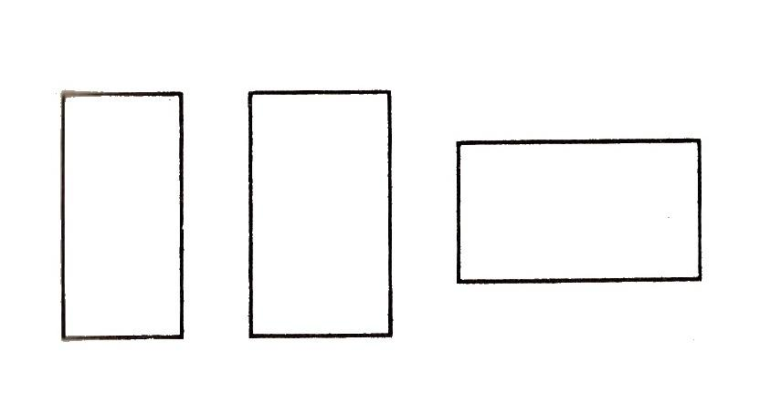
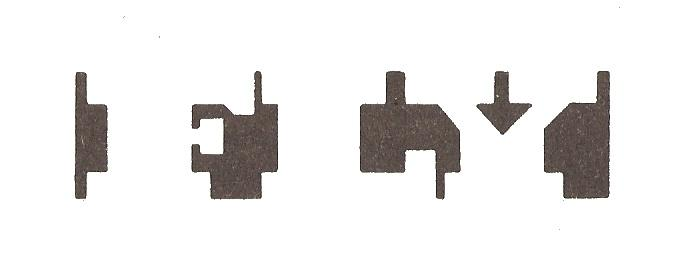
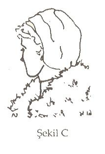

Metaprogramlar
"Doğru anahtarla her şeyi, yanlış anahtarla hiçbir şeyi söyleyemezsiniz. İşin tek inceliği anahtarı oluşturmaktır."
— George Bernard Shaw
İNSAN tepkilerinin, insanı hayrete düşürecek kadar çeşitli olduğunu farkedebilmenin en iyi yollarından birisi de bir grup insanla konuşmaktır. Aynı şeye insanların nasıl farklı tepki gösterdiklerine dikkat etmenin bir yararı olmaz.
Güdüleyici bir hikaye anlatırsınız; birisi kendinden geçer, bir diğeri göz yaşları içinde boğulur. Bir fıkra anlatırsınız, birisi gülmekten kırılır, bir diğerinin kılı bile kıpırdamaz. Her insanın farklı bir zihinsel dille dinliyor olduğunu düşüneceksiniz.
Sorun, aynı mesaja insanların niçin bu kadar farklı tepki gösterdiklerinin anlaşılmasıdır. Niçin birisi bardağın dolu tarafını, diğeri boş tarafını görür? Niçin bir mesaj; birisini enerjilendirir, heyecanlandırır ve güdülerken, diğerinde hiçbir tepki oluşmaz?
254
Shaw'ın yukarıdaki sözleri kesin olarak doğrudur. Doğru anahtarla hitap ederseniz, her şeyi yapabilirsiniz. Yanlış anahtarla hitap ederseniz, hiçbir şey yapamazsınız. En çok ilham veren mesaj, en aydınlatıcı düşünce, en zekice yapılmış eleştiri, yöneltilen kimse tarafından duygusal ve entelektüel açıdan anlaşılmamışsa; kesin olarak hiçbir anlam ifade etmez. Bunlar sadece kişisel gücümüzün değil, toplumsal olarak karşı karşıya gelmemiz, olası daha geniş
sorunların da temel anahtarlarıdır. Hem iş hayatınızda hem de özel yaşantınızda usta bir inandırıcı, usta bir iletişimci olmak istiyorsanız; doğru anahtarın nasıl bulunacağını bilmek zorundasınız.
Bunun yolu metaprogramlardan geçer. Metaprogramlar, kişileri bilgileri süreçleme şekline götüren anahtarlardır. Kişilerin iç temsillerini nasıl oluşturduklarını ve davranışları nasıl yönettiklerini belirlemede yardımcı olan güçlü iç paternlerdir. Metaprogramlar, neye dikkat edeceğinize karar vermede kullandığınız iç programlardır (ya da dizilişlerdir). Bilgileri bozar, siler ve genelleriz; çünkü, beynimiz herhangi bir anda, ancak o kadar bilgiyi dikkate alabilir.
Beynimizin bilgiyi süreçleme şekli, bilgisayarın süreçleme şekline çok benzer.
Şaşırtıcı derecede çok veriyi alır ve onları insana anlamlı gelecek şekilde düzenler. Bilgisayar da belirli görevleri yapabilmesi için bir çatı sağlayan yazılım olmadan, herhangi bir şey yapamaz. Metaprogramlar da beynimizde benzer şekilde çalışır. Onlar, neye dikkat edeceğimize, deneyimlerimize nasıl anlam vereceğimize ve bizi hangi yöne götüreceklerini yöneten yapıyı sağlar. Nelerin ilgilendirdiğine, nelerin ileride tehlike oluşturacağına karar verebilmek için, bir temel oluştururlar. Bilgisayarla iletişimde bulunabilmek için, yazılımı anlamak zorundasınız. İnsanla da etkin iletişimde bulunabilmek için metaprogramlarını anlamak zorundasınız.
Kişiler; davranış paternlerine sahip oldukları gibi, bu davranışları yaratmak için deneyimlerini organize eden paternlere de sahiptirler. Ancak bu zihinsel paternleri anlarsanız; ister birisi
255
ne araba satmak için, isterse birisinin sizin tarafınızdan gerçekten sevildiğini anlaması için mesajlarınızın alınmasını bekleyebilirsiniz. Koşullar değişse bile kişilerin nesneleri nasıl anladıkları ve düşüncelerini nasıl organize ettiklerine ilişkin tutarlı bir yapı vardır.
Birinci metaprogram bir şeye yaklaşmak ya da uzaklaşmakla ilgilidir : Tüm insan davranışları zevk almak ya da üzüntüden kaçınmak için şiddetli bir arzunun etrafında döner. Yanan kibritten kaçınmanızın nedeni, elinizin yanma acısından uzaklaşması içindir. Güneşin batışını oturup seyrediyorsunuz; çünkü gündüzün geceye doğru kaymasından oluşan muhteşem manzaranın zevkini tatmak istiyorsunuz.
Aynı olay daha karmaşık eylemler için de geçerlidir. Bir kişi zevk aldığı için, işine bir iki km. yürüyerek gidebilir. Bir diğer kişi de arabaya binmekten korktuğu için aynı yolu yürüyerek işine gidebilir. Bir kişi yazılarından ve görüşlerinden hoşlandığı için Faulkner, Hemingway ya da Fitzgerald'ı okuyabilir. Bir diğeri de aynı yazarları, etraftan kendisine cahil denmemesi için okuyabilir. O, acıdan kaçıyor, zevk almakla ilgilenmiyor. Bir şeye yaklaşmıyor, uzaklaşıyor.
Tartışacağımız diğer metaprogramlar da dahil, bu süreç kesin değildir. Herkes bazı şeylere yaklaşır ve bazı şeylerden uzaklaşır. Herkesin bir program ya da diğerine doğru yaklaşmak şeklinde kuvvetli bir eğilimi olduğunu gösteren üstün bir tarzı (modu) olmasına rağmen; hiç kimse her uyarıcıya aynı şekilde tepki göstermez. Bazıları enerjik olmaya ve risk almaya meraklıdır. Onlar kendilerini heyecanlandıracak bir şeylere doğru yöneldikleri zaman kendilerini çok rahat hissedebilirler. Diğerleri dikkatli, endişeli, konuyu anlama eğilimindedirler ve dünyayı çok tehlikeli bir yer olarak görürler. Eylemleri heyecan verici şeylere doğru yaklaşma değil, tehlikeli ya da güçlük yaratacak nesnelerden kaçma şeklindedir. Kişilerin hangi yöne doğru hareket ettiklerini bulabilmek için onlara bir arabada, evde,
256
İşte ya da herhangi bir yerde nasıl bir ilişki istediklerini sorun. Onlar size ne istediklerini ya da ne istemediklerini anlatırlar mı? Bu billginin anlamı nedir?
Her şey. Bir ürün satan iş adamıyız, onun reklamını, neler yaptığı ya da neler yapmadığını anlatarak iki şekilde yapabilirsiniz. Arabaları; onların hızlı, parlak ya da seksi olduklarını vurgulayarak ya da çok yakıt tüketmediği, bakımının çok maliyetli olmadığı ve çarpışmalarda güvenli olduğu üzerinde durarak satmaya çalışabilirsiniz. Kullandığınız strateji, bütünüyle ilgilendiğiniz kişinin stratejisine bağlı olmalıdır. Yanlış metaprogram kullanmaktansa; işe gitmemek daha iyi olabilir. Siz onu bir şeye yaklaştırmak istiyorsunuz;fakat onun tüm isteği geri dönmek için iyi bir neden bulmaktır.
Unutmayın ki araba aynı yolda ileri de geri de gidebilir. Bu, arabanın hangi yöne dönük olduğuna bağlıdır. Aynı olay kişiler için de geçerlidir. Diyelim ki, çocuğunuzun derslerine daha çok zaman ayırmasını istiyorsunuz. Ona;
"çalışırsan iyi olur, yoksa iyi bir okula gidemezsin" ya da "Fred'e bak çalışmadı ve okuldan atıldı. Şimdi hayatının geri kalan kısmını benzin istasyonundaki pompanın başında geçirecek. Bu, senin istediğin bir yaşam şekli midir?"
şeklinde sorular sormanız gerekir. Bu strateji bir işe yarar mı? Bu, çocuğunuza bağlıdır. Onun asıl güdülenmesi uzaklaşmaksa; işe yaraması gerekir. Fakat asıl güdülenmesi yaklaşmaksa ne olacak? Kendisini heyecanlandıran nesnelerle güdüleniyorsa, cazip bulduğu nesnelere doğru yaklaşıyorsa ne olur? Bu çocuk, bir nesneden uzaklaşması için verdiğiniz örnekle davranışını değiştirmeyecektir.
Nefesiniz tükenene kadar nasihat edebilirsiniz, fakat bu bir işe yaramaz. Çünkü yanlış anahtar kullanıyorsunuz. Siz Latince konuşuyorsunuz, oysa çocuk Yunanca biliyor. Hem kendi zamanınızı, hem de çocuğunuzun zamanını boşa harcıyorsunuz. Gerçekten de yaklaşma stratejisine sahip kişiler, kendilerine uzaklaşılması gereken şeyler sunulduğunda, kızıyorlar ya da darılıyorlar.
Çocuğunuzu, "Bunu yaparsan başarılı olur ve istediğin okulu seçebilirsin" şeklindeki ifadelerle daha iyi güdüleyebilirsiniz.
Sınırsız Güç -17
257
İkinci metaprogram iç ve dış referans çerçeveleriyle ilgilenir: Birisine, bir işi iyi yaptığını nasıl anladığını sorun. Bazıları için ispat dışarıdan gelir. Patron sırtınızı sıvazlar ve büyük iş başardığınızı söyler. Havalara uçtunuz. Büyük ödül kazandınız. Çalışmanız farkedildi ve arkadaşlarınız tarafından alkışlandı. Dışarı-
dan bu tür bir onay alınca, yaptığınız işin iyi olduğunu anlıyorsunuz. Dış referans çerçevesi budur.
Diğerleri için ispat, içten gelir. İyi yaptıklarında, kendi içlerinde bilirler. Iç referans çerçevesine sahipseniz, bütün mimari ödülleri kazanan bir bina tasarlayabilirsiniz; fakat siz onu başarılı bulmuyorsanız, tüm dış onaylar, yaptığınız işin başarı olduğu konusunda sizi ikna edemezler. Ya da tersine bir iş
yaparsınız; patronunuz ve arkadaşlarınız tarafından soğuk karşılanır; fakat siz onun iyi bir iş olduğunu hissediyorsanız, diğerlerinden çok kendi iç güdülerinize güvenirsiniz. Bu da iç referans çerçevesidir.
Birilerini bir seminere devam etmesi için ikna etmeye çalıştığınızı kabul edelim.
Şöyle söyleyebilirsiniz; "Bu seminere devam etmelisin. Fevkalade güzel. Biz tüm arkadaşlarımızla birlikte katıldık. Çok iyi vakit geçirdik ve sürekli olarak övgüyle o günlerden konuşuyoruz. Herkes seminerin yaşamlarını olumlu yönde değiştirdiğini söylüyor." Konuştuğunuz kişi dış referans çerçevesine sahipse; muhtemelen onu ikna edebilirsiniz. Tüm bu kişiler doğru olduğunu söylüyorsa; genellikle o da doğru olduğunu kabul edecektir.
Fakat iç referans çerçevesine sahipse ne olur? Diğerlerinin ne söylediğini anlatarak onu ikna etmek için çok güç anlar geçireceksiniz demektir. Bunlar, onun için herhangi bir anlam ifade etmez. Onu ancak kendisinin bildiği, kendisine çekici gelen şeylerle ikna edebilirsiniz. Ona, "Geçen sene devam ettiğin konferanslar dizisini hatırlıyor musun? Hatırlarsan şimdiye kadar sahip olduğun en önemli deneyimleri kazandığını söylemiştin. Bildiğim kadarıyla ona benzer bir şeyler var. Kontrol edersen, benzer deneyimleri bulabileceğini düşündüm. Sen ne düşünü
258
yorsun?" Bu yaklaşım bir işe yarar mı ? Elbette; çünkü, ona kendi diliyle hitap ediyorsunuz.
Tüm bu metaprogramların genel durum ve gerilimle ilgili olduğuna dikkat edilmelidir. Bazı şeyleri on-onbeş yıldır yapıyorsanız, kuvvetli bir iç referans çerçeveniz vardır. Daha önce hiç yapmamışsanız; genel durumda neyin doğru neyin yanlış olduğuna ilişkin kuvvetli bir iç referans çerçevesine sahip olma-yabilirsiniz. Patern ve tercihleriniz, zaman içinde gelişme eğilimindedir. Fakat sağlak olsanız bile, yararlı olduğu birçok durumda hâlâ sol elinizi de kullanıyorsunuzdur. Aynı olay metaprogramlar için de geçerlidir. Tek yönde gitmek zorunda değilsiniz. Yolu değiştirebilirsiniz. Kendiniz değişebilirsiniz.
Liderlerin çoğu, iç mi yoksa dış referans çerçevesine mi sahiptir? Gerçekten etkili bir lider, iç referans çerçevesine sahip olmak zorundadır. Bir eyleme geçmeden önce diğerlerinin düşüncelerini sormak için tüm zamanını harcayan kimse, gerçek bir lider olamayacaktır. Kararlı olabilmek için metaprogramların ideal bir dengesi vardır. Aşırı bir uçta kararlı olarak kalabilecek çok az kimsenin olabileceğini unutmayın. Gerçekten etkili liderler dışardan da etkin bilgi alma yeteneğine sahiptirler. Bunu yapmadıkları zaman kendilerini büyük görme hastalığına yakalanırlar.
Misafirlere de açık olan son seminerlerimin birisinden sonra, bir adam üç arkadaşıyla birlikte gelerek, "Beni kandıramazsınız" dedi. Bana yapabileceği her türlü tatsız şakayı yapıyordu. Hemen onun iç referans çerçevesine göre sıralama yaptığını net bir şekilde anladım. (Dışa dönük kişiler size gelip: şunları şunları şu şekilde yapmalısınız demezler). Onun arkadaşlarıyla konuşmasından da nesnelerden uzaklaşan birisi olduğunu açık olarak anladım. Bu nedenle ona;
"Sizi bir şey yapmanız için ikna edemem. Sizi ikna edebilecek tek kişi var, o da sizsiniz" dedim. Bu tepkiye nasıl karşılık vereceğini bilmiyordu. Seminerimle övüneceğimi ve onu kabul etmeyeceğini bekliyordu. Şimdi söylediklerimle uyuşmak zorunda kaldı; çünkü onların ger
259
çek olduklarını biliyordu. Sonra ona; "Seminere devam etmezsen, kimin kaybedeceğini bilen tek kişi sensin" dedim. Normalinde böyle bir noktayı belirtmek, benim için korkunç kötü bir olaydır. Fakat onun diliyle konuştum ve işe yaradı. Devam etmezse kendisinin kaybedeceğini söylemediğime dikkat edin. Öyle söylemiş olsaydım, kesinlikle devam etmezdi. Söylediklerimi şöyle analiz edebiliriz: "Seminere devam etmezsen kimin kaybedeceğini (uzaklaşmak) bilen tek kişi sizsiniz (iç referans çerçevesi)" Bu konuşmadan sonra; "Evet, doğru" dedi ve kayıt formunu imzaladı. Metaprogramlar hakkında bilgi sahibi olmadan önce, onu, daha önce bu kursu almış kişilerle konuşmaya (dış referans çerçevesi) ikna etmeye çalışır ve seminerden elde edebileceği yararları ( doğru yaklaşmak) anlatırdım. Fakat tüm bunlar sadece beni ilgilendirirdi. Onu değil.
Üçüncü grup metaprogramlar kendi kendileri ya da diğerleri tarafından yapılan sıralamayla ilgilidir. Bazıları insan etkileşimlerine temel olarak, sadece kendi içlerinde olanlara, diğerleri ve kendileri için neler yapabileceklerine göre bakarlar. Şüphesiz kişiler her zaman şu ya da bu aşırı ucun içinde olmazlar.
Sadece kendinize göre sıralarsanız; her şeyi kendine yontan bir bencil olursunuz. Sadece diğerlerine göre sıralama yaparsanız; sürekli sıkıntı çeken birisi olursunuz.
Bir işe adam almak durumunda kalırsanız; başvuranların, bu sıralamanın neresinde olduklarını bilmek istemez misiniz? Bir süre önce büyük bir hava yolu şirketi; şikayetlerin %95'inin işçilerin %5'iyle ilgili olduğunu belirledi. Bu %5'lik grup kuvvetli bir şekilde kendilerine göre sıralama yapmaktaydılar, çoğu zaman sadece kendileriyle ilgileniyor, diğerleriyle ilgilenmiyorlardı. Onlar kötü işçiler midir? Evet ya da hayır. Fakat açık olan bir şey varsa o da onların yanlış işte çalıştıkları ve kötü performans gösterdikleridir. Onların sevimli, çok çalışkan ve cana yakın olmaları da gerçeği değiştirmez. Yanlış işte çalıştırılan, doğru kişiler olabilirler.
260
Hava yolu şirketi ne yaptı? Kendilerine göre sıralama yapan kişileri değiştirdi.
Yeni grubu işe alma sırasında yapılan görüşmelerde, başvuranlara niçin bu şirkette çalışmak istedikleri sorularak işe alınacaklar belirlendi. Bu kişilerin düşüncelerinin çoğu, komisyon önünde verdikleri cevaplara göre belirlendi.
Gerçekten de onların bir komisyon üyesi gibi olan davranışlarına bakılarak karar veriliyordu. Yani komisyonda konuşan kişiye en çok dikkatini yönelten, onunla göz teması kuran, gülen yada destek veren kişiye en yüksek oy verildi. Diğer yönden, az ya da hiç dikkat etmeyen ve diğerleri konuşurken kendi dünyasına dalan kişiler, kendine göre sıralama yapan kişiler olarak düşünüldü ve işe alınmadılar. Bu seçimin sonucunda şirketin şikayeti, %80'in üzerinde azaldı.
Metaprogramların iş dünyasında önemli olmasının nedeni budur. Onu güdüleyen nedenin ne olduğunu bilmezseniz; bir insanı nasıl değerlendirirsiniz?
Gerekli ustalıklarla, öğrenme yeteneğiyle ve iç dünyasıyla, sahip olduğunuz işle doğru kişiyi nasıl eşleştireceksiniz? Birçok zeki insan kariyerlerini hayal kırıklığı içinde geçirmektedirler; çünkü doğal yeteneklerini en iyi şekilde kullanabilecekleri bir işte çalışmamaktadırlar. Bir durumda yükümlülük olan şey, bir diğer durumda değerli bir varlık olabilir.
Hava yolu gibi hizmet sektörlerinde, diğerlerine göre sıralama yapanlara gereksinim vardır. Bir muhasebe denetçisi arıyorsanız, kendisine göre sıralama yapan birisini tercih etmeniz gerekebilir. Görevini entelektüel olarak iyi yapan; fakat duygusal yönden zayıf olduğu için sizi şaşırtan kişilerle, kaç kez ilgilendi-niz? O, kendine göre kuvvetli sıralama yapan bir doktor olabilir. O çok zeki bir tanıcı (teşhisçi) olabilir, fakat onun sizinle ilgilenmediğini hissederseniz, onun işte bütünüyle etkili olmasını bekleyemezsiniz. Gerçekten de bazıları klinikte çalışmak yerine, araştırmacı olarak çalışmasının daha iyi olacağını düşünür.
Amerikan iş dünyasında doğru adamı doğru işe yerleştirmek, en önemli problemlerden biri olarak yerini koruyor. Bu sorunla, başvuranların bilgiyi nasıl süreçlediklerini değerlendirmeyi bilirsek ilgilenebiliriz.
261
Bu noktada tüm metaprogramların, eşit düzeyde kritik olmadıklarını belirtmekte yarar vardır. Nesnelerden uzaklaşan kişilerin, yaklaşanlardan daha iyi olduğu söylenebilir mi? Belki. Dünyada başkalarına göre sıralama yapanlar, kendilerine göre sıralama yapanlardan daha çok olsa, daha mı iyi olurdu? Muhtemelen. Fakat biz yaşamla olduğu gibi ilgilenmek zorundayız. Bizim arzuladığımız türde bir dünya yok, çocuğumuzun nesnelerden uzaklaşması yerine, yaklaşmasını isteyebilirsiniz. Onunla etkili bir şekilde iletişimde bulunmak istiyorsanız; nasılsa, o şekilde davranmak zorundasınız; sizin fikrinize göre olması gerektiği şekilde değil. Anahtar, kişiyi dikkatli ve üzgün olduğu zamanlar mümkün olduğu kadar dikkatle gözlemek, ne söylediğini dinlemek, kullandığı mecazları öğrenmek, fizyolojisini bilmektir. Kişiler metaprogramlarını tutarlı ve sürekli bir biçimde açıklarlar. Kişilerin eğilimlerini belirlemek ya da sıralamalarını anında öğrenmek için, çok yoğun bir çalışma gerekli değildir.
Kişilerin kendilerine göre mi diğerlerine göre mi sıralama yaptıklarını anlamak için diğerlerine nasıl dikkat ettiklerine bakmak gerekir. Diğerlerine doğru yöneliyor ve yüz ifadeleri diğerlerinin ne söyledikleriyle ilgileniyor mu yoksa arkasına yaslanarak sıkılıyor ve tepki göstermiyor mu? Herkes arasıra kendine göre sıralama yapar ve böyle yapmak da önemlidir (gereklidir). Anahtar, tutarlı olarak yaptığınızın ve sıralama yordamınızın, istediğiniz sonuçları üretip üretmemesidir.
Dördüncü sıralama programı, eşleşenler ve eşleşmeyenlerle ilgilidir.
Sizinle bir deney yapmak istiyorum. Şekillere bakınız ve her birinin diğerleriyle nasıl bir ilişki içinde olduklarını bana anlatınız.
262

Üç şekil arasındaki ilişkileri tanımlamanızı istersem birçok şekilde cevap verebilirsiniz. Hepsinin dikdörtgen olduğunu söyleyebilirsiniz. Hepsinin dört kenarlı olduğunu söyleyebilirsiniz. İkisinin dikey, birisinin yatay ya da ikisinin ayakta, birisinin yatık olduğunu ya da hiçbir şeklin diğer ikisiyle kesin olarak aynı ilişkiye sahip olmadığını söyleyebilirsiniz. Ya da birinin farklı, ikisinin benzer olduğunu söyleyebilirsiniz. Eminim siz daha fazla tanım düşünebilirsiniz. Burada ne olmaktadır? Hepsi aynı resmin tanımlamalarıdır; fakat, yaklaşımlar bütünüyle farklıdır. Bu metaprogramı öğrenmek; anlamak ve sevmek için bilgiyi nasıl sıraladığınızı belirler. Bazıları dünyaya, benzerlikleri bularak tepki gösterir.
Nesnelere bakarlar ve ortak noktalarını görürler. Onlar eşleşmecidir. Bu nedenle onlar sizin şeklinize bakarak şöyle söyleyebilirler, "Onların hepsi dikdörtgendir". Bir diğer eşleşmeci de istisnalardaki benzerliği bulur. O, şekle bakarak şöyle söyleyebilir, "Hepsi dikdörtgen; fakat bir tanesi yatık, diğerleri dik duruyor."
Diğerleri eşleşmez, yani fark insanlarıdır. Bunlar iki tiptir. Bir tipi dünyaya bakar ve nesnelerin nasıl farklı olduğunu görür. Şekillere bakarak hepsinin farklı olduğunu ve hepsinin birbirleriyle farklı ilişkileri bulunduğunu söyleyebilir.
Eşleşmez olan diğer tip ise; istisnalarla farklılıkları görür. Tersten, istisna 263
larla benzerlikleri bulan eşleşmeciye benzer. Önce farkları gÖrür sonra bunlara ortak noktalar ekler. Bir kişinin eşlemeci yada eşleşmez olduğunu anlamak için nesneler ya da koşullar kümesi arasındaki farkları sorun ve önce benzerliklere mi yoksa farklara mı dikkat ettiğini not edin. Benzerlik eşleşmecisiyle, farklar eşleşmezi bir araya gelirse neler olacağını hayal edebiliyor musunuz? Birisi hepsinin birbirine benzediğini söylerken, diğeri hepsinin birbirinden farklı olduğunu söyler. Benzerlikçi kişinin mantığına göre, onların hepsi dikdörtgendir.
Farklar eşleşmezin mantığına göre de onların üçünde de çizgi kalınlıkları, hatta açılar bile aynı olmayabilir. Peki, kim haklıdır? Şüphesiz ikisi de; çünkü bunlar kişisel algılamaya bağlıdır. Bununla birlikte; eşleşmezler genellikle ahenk sağlamakta güçlük çekerler. Çünkü, onlar daima fark yaratırlar.
Bu ayrımlamanın önemini anlamak ne işe yarar? Size, kendi işimden bir örnek vereyim. Beş ortağız ve birimiz hariç hepimiz eşleşmeciyiz. İşimizin çok büyük bir kısmı için bu çok güzel. Birbirimize benziyoruz ve birbirimizi seviyoruz. Aynı şekilde düşünüyoruz, aynı şeyleri görüyoruz. Bu nedenle toplantılarımız tam bir bütünlük içinde geçmektedir. Konuşuyoruz, fikirler üretiyoruz, birbirimizle eşleştiğimiz için bu fikirlerin hepsi güzel, daha güzel görünüyor; bir diğerinin gördüklerini görüyoruz, görüşlerini geliştiriyoruz ve heyecanlandıkça heyecanlanıyoruz.
Tüm bu olanlar, eşleşmez işin içine kanşıncaya kadar geçerlidir. O her zaman nesneleri bizim gördüğümüzden farklı bir biçimde görür. Biz nesnelerin birbirine uyan yönlerini görürken, o uymayan yönlerini görür. Biz coşku içinde ilerlerken, o birden araya girerek, işin yürümeyeceğini söyler. Sonra arkasına yaslanarak bizim ne gördüğümüze aldırmadan, bizim üzerinde durduğumuz tüm sorunların üzerinde durur. Biz zihinsel olarak yükseklerde uçmak isteriz. O hemen bizi yere indirerek; "Peki, bundan ne haber? Şundan ne haber? Buna ne diyeceksiniz?"
der.
264
Kafa mı ütülüyor? Evet. Değerli bir ortak mı? Elbette. Bizim yapmamız gereken şey; onu planlama sürecinin uygun zamanlarında kullanmaktır. Ayrıntılar üzerinde aynı şeyleri söyleyip durmasını ve fikir oluşturmamıza engel olmasını istemeyiz. O anlarda onun bizi başka şeylerle uğraştırmasından çok, beraber planlama yapmakla sağladığımız bütünlük bizim için daha değerlidir. İşin hızı kesildikten sonra bizim mutlaka boşluklarımızı, benzeşimsizliklerimizi, uygun olmayan şeyleri ve eşleşmenin sağlanamadığı noktaları görecek birilerine ihtiyacımaz var. Onun işlevi budur ve bizi bizden korur.
Eşleşmezler azınlıktadır. Yapılan araştırmalara göre kişilerin %35'i eşleşmezdir.
(Bir
eşleşmezseniz,
muhtemelen
araştırmanın
doğru
olmadığını
söyleyeceksiniz). Bununla birlikte eşleşmezler çok değerlidir; çünkü bizim görmediklerimizi görme eğilimindedirler. Eşleşmezler, genellikle şiirsel özlemler peşinde koşmazlar. Çoğu kez heyecanlandıklarında bile, hemen eşleşmemeye başlayarak heyecanlanmamanın bir yolunu bulurlar. Fakat onların sayısal duyarlılıkları, herhangi bir iş için çok önemlidir. "Cennetin Kapısı" filmi gibi, iş
dünyasındaki çok büyük başarısızlıkları düşünün. Manzaranın gerisine bakma yeteneğine sahipseniz; bir grup iç referans çerçeveli, yaratıcı eşleşmecinin bulunduğunu görebilirsiniz. Bunların hepsi amaca yaklaşır ve kaçınmaları gereken hiçbir şeye dikkat etmezler. Onların mutlak bir şekilde; "Bir saniye, bundan ne haber?" diyecek ve iç referans çerçeveli yaratıcı kişiler tarafından kabul edilebilecek şekilde, iletişimde bulunabilecek bir eşleşmeze ihtiyaçları vardır.
Eşleşmecilik ve eşleşmezlik tarzları son derece önemlidir; çünkü beslenme dahil birçok konuda önemli görevler yapabilecek niteliktedirler. Aşırı eşleşmeciler genellikle kendileri için kötü olabilecek yiyeceklerle beslenebilirler; çünkü onlar daima aynı yiyeceği yemek isterler. Onlar elma ya da erik yemek iste-meyeceklerdir. Olgunlukları, tatları, dokuları ve bekleme süreleri gibi sıralı değişkenlerde çok fazla değişiklik olabilir. Onlar
265
değişmeyen yiyecekleri, hamburger gibi, çok yiyebilirler. Bunlar kötü yiyecekler olabilir; fakat eşleşmecinin değişmeyen ruhunu ısıtırlar.
Yıllarca aynı şekilde tekrarlanıp duran bir işiniz olsa; bir fark insanını işe almak ister misiniz? şüphesiz istemezsiniz. Bir benzerlik insanını işe almak istersiniz ki, o da sizin ihtiyacınız olduğu sürece böyle bir iş yapmaktan zevk alacaktır. Öte yandan büyük oranda esneklik isteyen ya da sürekli olarak değişen bir işiniz olsaydı; bu pozisyona bir benzerlik insanını alır mıydınız? Almayacağınız açıktır.
Bu ayırımlar, uzun dönemde hangi işlerden, hangi kişilerin daha çok mutlu olacağını belirlemekte yararlı olur.
Golcü bir futbolcu örneğini düşünelim. Birkaç yıl önce sezona çok iyi başlamıştı.
Çok güzel goller atıyordu. Fakat o bir eşleşmez olduğundan, stilini değiştirmek zorunluluğunu hissetti ve formunu kaybetti. Her stadyuında kalenin arkasında bulunan değişik şekiller üzerinde dikkatini toplaması için inandırılmıştı.
Benzeşimsiz olduğu için bu şekillerin birbirinden ne kadar farklı olduğu üzerinde durmaya başladı ve daha önce kendisi için çok kolay olan hareketleri bile yapamaz duruma geldi.
Eşleşmeci ve eşleşmez tiplerin her ikisine de aynı inandırma tekniğini kullanır mısınız? İkisini birden aynı işde ister misiniz? Farklı eşleme stratejisi olan iki çocuğu da aynı şekilde mi yetiştirirsiniz? Şüphesiz hayır. Bu stratejilerin sabit ya da değişmez olduğunu söylemek istemiyorum. İnsanlar Pavlov'un köplekleri gibi değildir. Birisi onlara, onların anlayacağı bir dille nasıl yapacaklarını anlatırsa; insanlar stratejilerini bir noktaya kadar değiştirebilirler. Ömrü boyunca eşleşmez olan bir kişiyi, eşleşmeci yapmak için çok aşırı çaba ve sabır göstermek gerekir. Fakat yaklaşımlarının çoğuna; daha terbiyeli ve geniş kapsamlı olmasına süreç içinde yardımcı olabirsiniz. Farklı kişilerle bir arada yaşamanın gizlerinden birisi de budur. Diğer yönden genelleme yapmak eğiliminde oldukları için eşleşmecilerin de daha çok fark görmelerinde yarar vardır. Eşleşmecilerin bu hafta ile
266
geçen hafta ziyaret ettiği şehirler arasındaki (Los Angeles, New Pork'a çok benziyor demek yerine) tüm farklara dikkat etmeleri yararlı olur. Farklar üzerinde biraz daha durun. Onlar yaşama renk tutan olaylardandır.
Bir eşleşmeciyle eşleşmez bir arada mutlu bir şekilde yaşayabilirler mi?
Birbirlerini anladıkları sürece evet. Farklılıklar oluştuğunda, onlar birbirinin kötü ya da hatalı olmadığını, sadece nesneleri farklı şekilde algıladıklarını bilmelidirler. Ahengin oluşması için bütünüyle birbirinize benzemek zorunda de-
ğilsiniz. Algılama şekillerimizin farklı olduğunu hatırlamanız ve birbirinizi nasıl sevip sayacağınızı öğrenmeniz yeterlidir.
Şimdiki metaprogram, ikna etmek için nelerin gerekli olduğuyla ilgilidir.
Iknacının stratejisi iki kısımdan oluşur. Kişiyi tutarlı bir biçimde neyin ikna ettiğini öğrenmek için önce kişinin ikna olmak için hangi duyusal yapım bloklarına ihtiyacı olduğunu bulmalı ve sonra ikna olmadan önce bu uyarıcıları hangi sıklıkla almak zorunda olduğunu keşfetmelisiniz. Birisinin ikna edici ıııetaprogramını bulabilmek için, "Bir başkasının işinde başarılı olduğunu hangi yoldan öğrenirsiniz? Onları, görmek ve yaptıklarını izlemek; ne kadar iyi olduklarını işitmek; birlikte yapmak; yetenekleri hakkında birşeyler okumak zorunda mısınız?" sorusunu sormalısınız. Cevap, bunların bir karışımı olabilir. Birisinin iyi olduğuna, işini yaparken gördüğünüzde ve diğer kişiler onun iyi olduğunu anlattığında inanabilirsiniz. Bir sonraki soru ise; "Siz ikna olmadan önce, size iyi olduğunu hangi sıklıkta göstermek zorundadır?" şeklindedir.
Burada olası dört cevap şekli vardır: a) Derhal (Örneğin bir konuda iyi olduklarını size bir kere gösterdiklerinde siz onlara inanırsınız), b) Çok kez (iki ya da daha fazla), c) Bir zaman dilimi içinde (bir hafta, bir ay ya da bir yıl içinde), d) Sürekli olarak. Son durumda kişi iyi olduğunu her işte her zaman göstermek zorundadır.
Bir organizasyonun başındaysanız; kilit personelinizle ulaşa
267
bileceğiniz en değerli durum güven ve ahenktir. Onlarla ilgilendiğinizi bilirlerse, sizin için daha iyi ve daha çok çalışacaklardır. Size güvenmezlerse, sizin için çalışmazlar. Fakat güveni oluşturmanın bir kısmıda farklı kişilerin farklı ihtiyaçları olduğuna dikkat etmektir. Bazıları bir işi kurar ve onu sürdürürler. Sizi dürüst olduğunuzu ve onlarla ilgilendiğinizi bilirlerse; onları aldatacak bir şey yapıncaya kadar sürecek bir bağ oluşturabilirsiniz.
Bu yöntem herkes için geçerli değildir. Bazı işçilerin bundan fazlasına ihtiyaçları vardır. Onlara bir kelime, bir çalışmalarını onaylama, herkesin önünde destek olma ya da başarması için önemli bir görev vermek gibi ek bir şeyler daha göstermelisiniz, Onlar tam olarak sadık ve zeki olabilir; fakat diğerlerinden daha çok onaylanmak ihtiyacını hissederler. Aranızdaki bağın hâlâ geçerli olabilmesi için, daha çok ispata ihtiyaçları vardır. İyi satıcıların, bazılarına bir kez satış
yapınca artık onların sürekli müşterileri olacağını bilmesine benzer bir durumdur. Bazıları satın almadan önce bir ürünü iki ya da üç kez görmek zorundadır. Bazılarına tekrar satış yapabilmeniz için aradan altı ay geçmesi gerekir. Satıcıların en çok tuttukları kişi ise, ürünü yıllardır kullanan; fakat tekrar satın almaya geldiğinde o ürünü niçin kullanması gerektiğini öğrenmek isteyen müşteridir. Aynı süreç personelle olan ilişkilerinizde daha yoğun bir şekilde ortaya çıkar. Bazılarına sevdiğinizi bir kez ispatlarsanız; bu ispat onun için sonsuza kadar geçerlidir. Diğerlerine her gün ispatlamak zorundasınız. Bu metaprogramları anlarsanız; bazılarını ikna etmek için plan hazırlarken size ne kadar yararlı olduğunu görürsünüz. Onu ikna etmek için neler yapılması gerektiğini önceden bilirseniz; her defasında sevdiğinizi ispatlamanız gereken kişilerle karşılaşınca şaşırmazsınız. Çünkü bu davranışını önceden biliyor olacaksınız.
Diğer metaprogram, gerekliliğe karşı olanaklılıkla ilgilidir. Birisine şimdiki şirketinde niçin çalıştığını ya da yeni arabasını ya da evini niçin satın aldığını sorun. Bazı kişiler, isteklerinden çok
268
gereklilikle güdülenirler. Yapmak zorunda oldukları için bir şey yaparlar. Neyin olanaklı olduğunu düşünerek hareket ederler. Deneyimlerin sonsuz sayıdaki çeşitliliğine bakmazlar.Önlerine ne gelir ve neler mevcutsa, onlarla yaşamını sürdürürler.Yeni bir işe, eve, arabaya hatta yeni bir eşe bile ihtiyaçları olduğunda piyasaya çıkarlar ve mevcut olanı kabul ederler. Diğerleri, olasılıkları (olanakları) araştırmak için güdülenirler. Ne yapmak zorunda olduklarından çok, ne istediklerine göre güdülenirler. Değişik durumları, deneyimleri, seçimleri, yolları araştırırlar. Gerekliliğe göre güdülenen kişi bilinen ve güvenli olan şeylerle ilgilenir. Olanaklılıkla güdülenen kişi, bilinmeyenede eşit düzeyde ilgi gösterir. Nelerin olabileceğini, hangi fırsatların gelişebileceğini öğrenmek ister.
Siz işveren olsanız, hangi tip kişiyi işe almak istersiniz? Bazıları muhtemelen;
"Olanaklılıkla güdülenen kişiyi" cevabını verecektir. Her şeyin ötesinde zengin bir potansiyel duyguya sahip olmak, yaşamı daha da zenginleştirir. iç güdüsel olarak çoğumuz (gereklilikle güdülenen kişilerin de çoğu) kendilerine sonsuz sayıda yeni yolların açık kalması yönünde oy kullanacaklardır.
Gerçekte bu önceden planlanmış bir durum değildir. Ayrıntılara dikkat etmeyi, düzenli bir hıza ayak uydurmayı ve sürekliliği gerektiren işler vardır. Bir otomobil fabrikasında kalite kontrol denetçisi olduğunuzu kabul edelim.
Olanaklılık duygusu güzeldir. Bununla birlikte burada, daha çok gereklilik duygusuna ihtiyacınız olabilir. Tam olarak neyin gerekli olduğunu bilmeye ve hissetmeye ihtiyacınız olabilir. Tam olarak neyin gerekli olduğunu bilmek ve onun yerine getirildiğini görmek zorundasınız. Olanaklılıkla güdülenen bir kişi, bu işin tam kendisine göre olduğunu düşünecektir.
Gereklilikle güdülenenlerin başka bir özellikleri daha vardır. Bazı işlerde sürekliliğin özel bir önemi vardır. Bunun için de aynı görevi uzun süre yapacak kişilere gereksinim vardır. Olanaklılıkla güdülenen kişi; yeni durumlar, yeni fırsatlar, yeni giri
269
şimler, yeni güçlükler arar. Daha çok potansiyel sunuyor gibi görünen başka bir iş bulduğunda bu, onun işi bırakması için iyi bir fırsattır. Gereklilikle güdülenenler; çok gayretli bir ruha sahip olduklarından değil, ihtiyaçları olduğu için iş yaparlar. Olanaklar içinde risk alanlar, barıştan ve güzelden yana olanlar, palavracılar için çok sayıda iş vardır. Şirketiniz bütünüyle yeni bir alanda faaliyet göstermeye başlarsa; olanaklılıkla güdülen bazılarını işe almalısınız.
Dayanışmaya, uzun ömürlülüğe ve tutarlılığa pirim veren işler de vardır. Bu tür işler için gereklilikle güdülenen kişiler gereklidir. Kişisel metaprogramlarınızın ne olduğunu bilmek de eşit oranda önemlidir. Çünkü iş ararken sizin ihtiyaçlarınızı karşılayabilecek en iyi işi seçmenize yardımcı olur.
Aynı ilke çocuklarınızı güdülemede de işe yarar. Eğitimin erdemleri ve iyi bir okula gitmenin önemi üzerinde duruyor olduğunuzu kabul edelim. Çocuğunuz gereklilikle güdüleniyorsa niçin iyi bir eğitime ihtiyacı olduğunu göstermek zorundasınız. Bir işe girmek için mutlaka bir diplomanın gerekli olduğunu anlatabilirsiniz. İyi bir mühendis olmak için neden matematik temelinin ya da iyi bir öğretmen olabilmek için neden dilde ustalaşmanın gerekli olduğunu açıklayabilirsiniz. Çocuklarınız olanaklılıkla güdüleniyorsa; değişik bir yaklaşım uygulamak zorundasınız. O, yapmak zorunda olduklarından rahatsız olur. Bu nedenle ona iyi bir eğitimin niçin sınırsız olanaklara açılan kapı olduğunu açıklamak zorundasınız. Öğrenmenin kendisinin, olanaklara giden en büyük bulvar olduğunu gösteriniz. Kafasını keşfedilecek yeni bulvarlar hayalleriyle, kazanılacak yeni boyutlarla ve keşfedilecek yeni şeylerle doldurun. Yöneltmenin yolları çok farklı olmasına rağmen, her çocukla ulaşılacak sonuç aynıdır.
Diğer metaprogram, kişinin çalışma stiliyle ilgilidir. Herkesin bir çalışma stratejisi vardır. Bazıları bağımsız olmadıkça mutlu olamazlar. Başkalarıyla birlikte çalışmakta güçlük çekerler ve çok fazla denetim altında çalışamazlar.
Kendi gösterilerini ken-
270
dileri yapmak zorundadırlar. Diğerleri bir grup üyesi olarak en iyi performanslarını gösterebilirler. Onların stratejisi işbirlikçiliktir (kooperatif).
Alacakları herhangi bir görevin sorumluluğunu paylaşmak isterler. Diğerleri de ortalama yani ikisinin arasında bir stratejiye sahiptirler. Görev için tek başlarına sorumluluk yüklenmeyi sürdürürken başkalarıyla birlikte çalışmak isterler.
Sorumlu, fakat tek başına değildirler.
İşçilerinizden, çocuklarınızdan, danışmanlık yaptıklarınızdan en iyi sonucu almak istiyorsanız; onların en etkin olduğu tarzları gösteren çalışma stratejilerini belirlemeniz gerekir. Bazen çok zeki bulduğunuz bir işçinizin, sürekli kafa ütülediğini görürsünüz. O daima kendi usulüne göre bir şeyler yapmak zorundadır. Şimdi onu işten çıkarmanız gerekmeyebilir. O kendi işini yapacak biri olabilir ve siz ona kendisini gösterebileceği bir ortam hazırlamazsanız; eninde sonunda kendi işinin başına geçecektir. Böyle değerli işçilere sahip olduğunuzda; yeteneklerinden sonuna kadar yararlanabilmek için; ona mümkün olduğu kadar serbest davranabileceği bir ortamı sağlamaya çalışmalısınız. Onu bir grubun üyesi yaparsanız; gruptaki herkesi deli eder.
Mümkün olduğu kadar bağımsız yaparsanız; son derece değerli olabilir .
Girişimcilikteki yeni kavramlar bütünüyle bu konularla ilgilidir.
Tüm insanların beceriksizlik düzeylerine kadar yükseltilebileceğini söyleyen Peter ilkesini duymuşsunuzdur. Bunun nedenlerinden birisi de işverenlerin, genellikle işçilerin çalışma stratejilerine karşı duyarsız olmalarıdır. Bazı insanlar işbirliği ortamında en iyi performanslarına ulaşırlar. İnsani ilişkilerin ve geri beslemenin çok yoğun olduğu ortamlarda daha iyi sonuç verirler. Onları iyi çalıştıklarından ötürü yeni, bağımsız bir işin sorumluluğunu vererek ödüllendirir misiniz? Onlardan en iyi şekilde yararlanmak istiyorsanız, cevabınız hayır olmalıdır. Bu, o kişiyi aynı düzeyde tutacağınız anlamına gelmez. Ona, yeteneklerini en iyi kullanabileceği yeni işler vermeniz gerektiğini açıklar.
271
Benzer şekilde ortalama stratejiye sahip birçok kimse, bir grup üyesi olmak ister; fakat aynı zamanda işlerini yalnız başlarına yapmaları gerekir. Herhangi bir organizasyonda üç stratejiye de hitap edecek işler vardır. Anahtar, kişilerin en iyi nasıl çalıştıkları konusunda hassas olmak ve onları verimli olacakları işlerde çalıştırmaktır.
İşte bugün yapılacak bir alıştırma. Bu bölümü okuduktan sonra kişilerin metaprogramlarını öğrenmeye çalışınız. Onlara; bir ilişkiden (ya da araba, ya da ev) ne istediklerini sorun. Bazı işlerde başarılı olduklarını nasıl anladıklarını sorun. Bu ay yapmakta olduğu işle geçen ay yapmış olduğu iş arasındaki ilişkiyi sorun. Bir şeyin gerçek olduğuna inanmadan önce, bazı şeylerin kaç kere gösterilmek zorunda olduğunu sorun. En beğendiği iş deneyimini ve onun için bu deneyimin neden önemli olduğunu anlatmasını isteyin.
Kişi bu sorulan sorarken size dikkat ediyor mu? Sizin yanıtlarınızla mı, yoksa başka şeylerle mi ilgileniyor? Tartıştığınız metaprogramları başanlı bir şekilde öğrenebilmeniz için; sorabileceğiniz soru sadece birkaç tanedir. Gerekli bilgiyi alamazsanız; istediğinizi elde edinceye kadar, soruları başka biçimlerde sormayı sürdürünüz.
Hemen hemen iletişim sorunlarınızın hepsinde; karşınızdakinin metaprogramını anlamanın sorunun çözümünde yararlı olabileceğini görürsünüz. Sevdiğiniz bir insanın kendisini sevilmiyor hissetmesi, adına çalıştığınız kişinin sizi yanlış yöne sürüklemesi, yardım etmeye çalıştığınız kişinin hiç tepki göstermemesi gibi yaşamınızda hayal kırıklığına uğradığınız bir anı düşünün. Burada ihtiyacınız olan şey, işleyen metaprogramı, ne yapmakta olduğunuzu ve diğer kişinin ne yaptığını tanımaktır. Örneğin; size sevgi ilişkisine sahip olmak için tek bir doğrulama yeterken, karşınızdaki kişi için bu ilişkinin sürekli gösterilmesi gerekebilir. Ya da nesnelerin birbirine ne kadar benzediğini gösteren bir öneri getirirsiniz; fakat üstünüzdeki kişi başka şeyler duymak isteyebilir. Ya da bir kişiyi sakınması gereken
272
bir konuda uyarmaya çalışırsınız; o ise takip etmesi gereken bazı şeyler duymak istiyor olabilir.
Yanlış anahtarla konuştuğunuz zaman, mesajınız da yanlış olacaktır.
Yöneticilerin işçilerle ilgilenmesinde olduğu gibi, anne babaların da çocuklarıyla ilgilenirken karşılaştıkları bir sorundur. Geçmişte, başkalarının kullandıkları temel stratejileri farketmeye ve ölçmeye karşı çoğumuz duyarlı bir yöntem geliştirmeye çalışmamıştır. Birisine bir mesajınızı iletemediğiniz zaman, mesajın kapsamını değiştirmek zorunda değilsiniz, iletişimde bulunmaya çalıştığınız kişinin metaprogram şekline uyacak şekilde değişiklik yapabilme yeteneğine sahip olabilmek İçin, esnekliğinizi geliştirmek zorundasınız.
Birkaç metaprogramı bir arada kullanarak genellikle etkin bir iletişim sağlayabilirsiniz. Bir keresinde bir işimizi yapacak kişiyle, ortaklarımla birlikte anlaşmazlığa düştük. Beraberce toplandık ve ben, hepimizi tatmin edecek bir sonuç yaratmak istediğimi söyleyerek olumlu bir çerçeve içinde toplantıyı baş-
latmak istedim. O hemen, "Bunların hiçbiri beni ilgilendirmez, Bu paraya sahibim ve kesinlikle onu isterim. Sizin avukatlık taslamanızı ve beni hata yapmaya zorlamanızı istemiyorum" dedi. Böylece uzaklaşmaya başladı. "Biz bu işi yapmak istiyoruz; çünkü başkalarına ve kendimize daha iyi bir yaşam sağlamak için yardım etmeye kararlıyız ve biz bunu birlikte çalışarak gerçek-leştirebiliriz." dedim. O; "Hepimiz başkalarına yardım etme kararında değiliz.
Sizin ilgilendikleriniz, beni ilgilendirmez. Beni sadece buradan mutlu bir şekilde ayrılmak ilgilendirir" dedi. Toplantı çok küçük bir gelişmeyle sürerken; onun uzaklaşan, kendine göre sıralayan, eşleşmez, iç referans çerçeveli, bir şeyi görmedikçe, duymadıkça inanmayan ve bu özellikleri gittikçe kuvvetlendiren birisi olduğu açık olarak belli oldu.
Özellikle hemen her şeye karşı olduğundan kusursuz bir iletişim için bu metaprogramların bir katkısı olmadı. Hiçbir gelişme olmadan hemen hemen iki saat geçti ve ben her şeyden vazgeçmek üzereydim. Birdenbire kafamda bir şimşek çaktı ve
Sınırsız Güç -18
273
yaklaşımımı değiştirdim. "Senin zihnindeki fikri şu anda anladım" dedim. Sonra bir el hareketi yaptım. Böylece iç referans çerçevesini ele alarak dışsal hale getirdim; çünkü, kelimelerle başarılı olamamıştım. Böylece kontrolü ele aldım.
Sonra, "Şimdi burada bir dakika içinde karar vermek zorundasın, karar ver-mezsen kaybın büyük, hem de çok büyük olacak. Ben kaybetmeyeceğim; fakat sen kişisel olarak kaybedeceksin" dedim. Böylece ona uzaklaşılacak yeni birşey vermiş oldum.
Kaldığım yerden devam ederek; "Sen (kişisel) bir çözüm bulunduğuna inanmadığın için kaybedeceksin (uzaklaşılacak şey)" dedim. O bir eşleşmez olduğundan tersini düşünmeye yani bir çözümün olduğunu düşünmeye başladı.
Konuşmamı şöyle sürdürdüm: "Bugün vereceğin karar sonucunda her geçen gün ödemek zorunda kalacağın ücreti gerçekten ödemeye istekliysen; kendi içinde onu kontrol etmen ve görmen (iç referans çerçevesi) iyi olur. Çünkü diğer insanlara şimdi nasıl davrandığını ve ne yaptığını sürekli olarak anlatacağım (inandırma stratejisi). Karar vermek için bir dakikan var. İşi yapmak için şimdi karar vereceksin ya da diğer türlü kişisel olarak sonsuza kadar kaybedeceksin.
Bana bak ve benzeşimli olup olmadığımı gör" dedim.
Yirmi saniye sonra hemen konuya girerek; "Bakın arkadaşlar, ben daima sizinle birlikte çalışmak isterim. Her şeyi birlikte başarabileceğimizi biliyorum" dedi. Bu sözleri isteyerek söyledi. Gerçek bir dostmuşuz gibi coşkuyla ayağa kalktı.
"Sadece konuşup konuşamayacağımızı bilmek istedim" dedi. İki saat sonra niçin bu kadar olumlu oldu? Çünkü onu güdülemek için kendi dünya modelimi değil, onun metaprogramlarını kullandım.
Söylediklerim beni incitecek şeylerdi. Kişilerin farklı metaprogramlara ve paternlere sahip olduklarını öğreninceye kadar, benim düşündüklerimin tersine davrandıklarında hayal kırıklığına uğruyordum.
Şimdiye kadar ilgilendiğimiz metaprogram sıralama ilkeleri önemli ve etkilidir.
Bununla birlikte unutulmaması gereken
274
önemli bir nokta da farkında olabileceğiniz metaprogram sayısı, duyarlılığınızla, ayırt etme yeteneğinizle ve hayal gücünüzle sınırlıdır. Herhangi bir konuda başarılı olmanın anahtarlarından biri de yeni ayırımlar yapabilme yeteneğidir.
Metaprogramlar, kişilerle nasıl ilgileneceğinize karar vermede önemli ayırımlar yapabilmeniz için araçlar verecektir. Sadece burada verilen metaprogramlarla yetinmek zorunda da değilsiniz. Bir olanaklılık öğrencisi olun. Etrafınızdaki kişileri sürekli ölçün ve ayarlayın. Onların dünyaya nasıl baktıklarını, özel paternlerini not edin ve benzer paternlere sahip olanlar varsa, onları da analiz etmeye başlayın. Bu yaklaşım aracılığıyla, her tip insanla etkin olarak nasıl iletişim kurulabileceğini öğrenmenizi sağlayacak kişilerin ayırımını yapmak için tam bir ayırım kümesi geliştirebilirsiniz.
Örneğin, bazıları temel sıralamalarını kişilere göre, diğerleri de ussal düşüncelere göre yaparlar. Onları aynı şekildemi ikna etmeye çalışırsınız?
Şüphesiz hayır. Bazı kişiler kararlarını belirli gerçek ve şekillere dayanarak verirler. Öncelikle parçanın çalışıp çalışmadığına bakarlar. Daha sonra onu büyük resmin içinde düşünürler. Bazıları da önce daha genel kavram ve fikirlere bakarlar. Onlar genel parçalara tepki gösterirler. Önce büyük resmi görmek isterler. Beğenirlerse ayrıntıları düşünmeye başlarlar. Bazı kişiler başlangıçta heyecanlanırlar. En çok heyecanlandıkları an, yeni bir fikri duydukları andır.
Sonra heyecanlarını kaybederler ve başka bir şeye yönelirler. Diğerleri de işin bitimine dikkat ederler, ister bir kitabın okunması, isterse yapılan bir görev olsun, işin bitimini sonuna kadar görmek zorundadırlar. Bazıları da yiyeceklere göre sıralama yaparlar. Yiyecekle, her şey yerindedir. Yaptıkları ya da yapmayı düşündükleri hemen hemen her şeyi yiyecekler aracılığıyla geliştirirler. Onlara bir yere nasıl gidileceğini sorarsanız; "Burger King'e ulaşıncaya kadar aşağıya gidin, sola dönün ve solda Mc Donald's'a ulaşıncaya kadar inin ve sağa dönün ve sonra Kentucky Fried Chicken'dan sola dönerek kahverengi olan binaya kadar devam
275
edin" şeklinde cevap verirler. Gittikleri bir filmi sorunca, hemen yiyecek-içecek masalarının ne kadar kötü olduğunu anlatmaya başlarlar. Bir düğünü sorunca pastayı anlatmaya başlarlar. Temel sıralamalarını kişilerle yapanlar, genellikle düğünde ya da filmde gördükleri kişilerden daha çok konuşurlar. Temel sıralamayı eylemlere göre yapanlar, düğünde ya da sinemada gerçekten neler olduğu hakkında konuşurlar.
Metaprogramları uygulamanın bir yararı da bir denge modeli vermesidir.
Metaprogramları uygulamak için şu ya da bu stratejiyi izleriz, bazı metaprogramlar için bir yöne daha fazla ağırlık verebiliriz. Diğerleri için birinin yerine diğeri üzerinde aşırı derecede durabiliriz. Bu stratejiler taşa kazınmış
yazılar gibi değildir. Kendinizi güçlendirecek bir duruma girme kararını verebildiğiniz gibi, size engel değil yardımcı olacak bir metaprograma kendinizi uyarlayabilirsiniz. Metaprogramınızla yapabileceğiniz, beyninize onu silmesini söylemektir. Bu nedenle, siz bir şeye yaklaşıyorsanız; örneğin, uzaklaşılacak şeyleri siliyorsunuzdur. Uzaklaşıyorsanız, yakınlaşılabilecek şeyleri siliyorsunuz demektir. Metaprogramları değiştirmek için tüm yapacağınız şey sileceğiniz şeylerin farkında olmak ve dikkatinizi onların üzerinde yoğunlaştırmaya başlamaktır.
Davranışlarınızla kendi kendinizi yanıltma hatasına düşmeyin ve aynı şeyi başkaları için de yapmayın. Siz " Joe'yu bilirim. O şunları, şunları yapar" dersiniz.
Güzel, siz Joe'yu bilmiyorsunuz. O'nu davranışları aracılığıyla biliyorsunuz. Fakat bunlar daha çok sizin davranışlarınızda. Her şeyden uzaklaşma eğiliminde olan bir kişiyseniz; bu sizin davranış paterniniz olabilir. Ondan hoşlanmazsanız, değiştirebilirsiniz. Gerçekte de değişmemenin hiçbir özürü yoktur. Şimdi bu güce sahipsiniz. Tek sorun, bildiklerinizi kullanmak için yeterli nedenlere sahip olup olmamanızdır.
Metaprogramları değiştirmenin iki yolu vardır. Bir tanesi önemli duygusal olaylar aracılığıyla yapılır. Anne-babanızın sürekli olarak bir şeylerden uzaklaştığını ve bunun sonucu olarak
276
tam kapasitelerini kullanamadığını görmüşseniz; bu durum sizin uzaklaşmanızı ya da yaklaşmanızı etkilemiş olabilir. Sadece gerekliliğe göre sıralama yapıyorsanız ve şirketinizin dinamik bir olanaklılık duygusuna sahip bir kişi araması yüzünden, iş hayatında büyük bir fırsat kaçırmışsanız; yaklaşımınızı değiştirerek bir şoka girebilirsiniz. Her şeye yaklaşma eğilimindeyseniz ve bir yatırıma acele bakmaktan, bir sorunla karşılaşmışsanız; bu, bundan sonra önünüze gelecek önerilere karşı bakışınızı değiştirecektir.
Değişmenin diğer yolu da değişmeye bilinçli olarak karar vermektir. Çoğumuz hangi metaprogramları kulandığımızı düşünmeyiz bile. Değişmeye doğru atılacak ilk adım, bilincinde olmaktır. Şu anda tam olarak ne yaptığımızın farkında olmak, yeni seçimler ve dolayısıyla değişim için bir fırsat sağlar. Nesnelerden kuvvetli bir şekilde uzaklaşma eğiliminde olduğunuzu farkettiğinizi kabul edelim. Bu eğiliminiz hakkında neler hissedeceksiniz? Uzaklaşmak istediğiniz şeyler yok mu? Bazı şeylere bilinçli olarak yaklaşmak, kontrollü olmanın gereklerinden biri değil mi? Büyük liderlerin ve başarı sahiplerinin çoğu, uzaklaşmaktan çok yaklaşma eğiliminde değil midirler? Bunun için de biraz gerilim içine girmek istersiniz. Size cazip gelen bazı şeyleri düşünmeye başlayabilir ve aktif olarak onlara yaklaşmaya başlayabilirsiniz.
Metaprogramları
daha
üst
düzeyde
de
düşünebilirsiniz.
Ulusların
metaprogramları
var
mıdır?
Davranışları
var,
değil
mi?
Öyleyse
metaprogramları da var. Kolektif davranışlar çoğu kez liderlerinin davranışlarına bağlı olarak bir patern oluştururlar. ABD'nin önemli bir kısmında, yaklaşma kültürü varmış gibi görünüyor. Iran gibi bir ülkenin iç referans mı yoksa dış referans çerçevesi mi vardır? Geçen seçimleri düşünün. Walter Mondale'in temel metaprogramı neydi? Birçok kimse onu uzaklaşan tip olarak algıladı. O, talihsizliklerinden
ve
endişelerinden
konuştu.
Reagan'ın
gerçekleri
söylemediğini ve vergileri artıracağını söyledi. "En azından vergileri artırmak zorundayız,
277
yoksa felaketle karşılaşmamız kesindir" dedi. Onun doğru ya da yanlış olduğunu söylemiyorum, sadece paternine dikkat ediyorum. Ronald Reagan olumlu sinyallerden başka bir şey söylemiyordu. Bu sırada Mondale hep karanlık sorunlardan söz ediyordu. Mondale daha fazla duyarlılık oluşturabilirdi. Ulusun görmesi gereken temel sorunlar vardır. Fakat politika oyununun büyük kısmının oynandığı duygusal düzeyde, Reagan'ın programı, ulusun metaprogramıyla daha etkin olarak eşleşiyordu.
Bu kitaptaki her şey gibi metaprogramlar da iki düzeyde kullanılmalıdır.
Birincisi, diğerleriyle iletişimimize rehberlik edecek ve düzenleyecek bir araç olarak kullanmaktır. Fizyolojinin kişi hakkında sayısız hikaye anlatması gibi, metaprogramlar da onu nelerin güdülediği, nelerin korkuttuğu hakkında kusursuz bir şekilde konuşurlar. İkinci düzey ise, kişisel değişim aracı olarak kullanılmasıdır. Davranışlarınızın, siz olmadığını unutmayın. Size karşı olan herhangi bir paterni çalıştırma eğilimindeyseniz, onu değiştirmek zorundasınız.
Metaprogramlar kişisel değişim ve düzenleme için en güçlü araçlardandır. Mevcut bazı en yararlı iletişim araçlarının anahtarlarını sağlarlar. Gelecek bölümde bir diğer değerli iletişim aracını tartışacağız. Bu araçlar size………gösterecek.
278
BÖLÜM:15
Dirençle Başa Çıkmanın ve
Problemleri Çözmenin
Yolları
"Dünyanın gidişi hariç, her türlü akıntıya karşı durabilirsiniz."
— Japon atasözü
DAHA önce modellemenin nasıl yapılacağını, istenen sonuçları üreten kesin davranış paternlerinin nasıl belirleneceğini, yaşamınızı kontrol edebilmek için davranışlarınızı nasıl kontrol edeceğinizi öğrendiniz. Temel fikir, davranışlarınızı deneme-yanılma yoluyla seçmek zorunda olmadığınızdır. Beyninizi en etkin biçimde nasıl çalıştıracağınızı öğrenerek bir kral olabilirsiniz.
Başkalarıyla ilgilenirken, belirli bir miktarda deneme-yanılmanın olması kaçınılmazdır. Kontrol edebildiğiniz sonuçların etkinliği, kesinliği ve hızı aracılığıyla, diğerlerinin davra-279
nışlarını yönetemezsiniz. Fakat bu sürecin nasıl hızlandırılacağını öğrenmek, kişisel başarınız için bir anahtardır. Bunu; ahengi geliştirerek, metaprogramları anlayarak, onların terimleriyle ilgilenebilmek için diğerlerinin nasıl düzenleneceğini öğrenerek yapabilirsiniz. Bu bölüm, insanın doğasında bulunan etkileşimiyle yani deneme-yanılmayı ve dirençle başa çıkmanın ve problemlerin nasıl çözüleceğinin öğrenilerek, keşfetme hızının ' nasıl artırılacağıyla ilgilidir.
Kitabın birinci kısmının bir anahtar kelimesi varsa o da modellemedir.
Mükemmelliği modellemek, istediğiniz sonuçları hızla yaratabilmek için önemlidir. Kitabın ikinci kısmı için bir anahtar kelime varsa o da esnekliktir.
Esneklik, tüm etkin iletişimcilerin ortaklaşa sahip oldukları bir şeydir. Onlar, birisinin nasıl düzenleneceğini ve kendi davranışlarını nasıl değiştireceklerini öğrenirler. Değişme, istediklerini elde edinceye kadar sözlü ya da sözsüz bir şekilde sürer. îyi iletişimde bulunabilmenin tek yolu; alçak gönüllü ve değişme isteğiyle başlamaktır. İyi niyetin gücüyle iletişimde bulunamazsınız; görüşünüzü sopayla birilerinin anlamasını sağlayamazsınız. Ancak; sürekli, becerikli, dikkatli bir esneklikle iletişimde bulunabilirsiniz.
Esneklik, genellikle doğal olarak ortaya çıkmaz. Çoğumuz, düzenliliği gittikçe azaltan aynı paternleri izleriz. Bazılarımız bir konuda haklı olduğumuza o kadar eminizdir ki, sadece kuvvetli bir tekrarla haklı olduğumuzu kabül ettirebileceğimizi sanırız. Burada ego ve ataletin bir bileşimi rol oynamaktadır.
Çoğu kez en kolay yol, daha önce nasıl davranmışsak, öyle davranmaktır. Fakat genellikle en kolay yapılabilecek, en kötü şeydir. Bu bölümde yönleri değiştirmenin, paternleri kırmanın, iletişimi tekrar yönlendirmenin ve yanılmadan yararlanmanın yolları üzerinde duracağız. Mistik ozan, William Blake, bir zamanlar şöyle yazmıştı, "Fikrini asla değiştirmeyen kişi, suyun içinde durup zihin sürüngenlerini besleyenlere benzer." İletişim paternlerini değiştirmeyen kişiler, kendilerini aynı tehlikeli bataklıkta bulurlar.
280
Daha önce en fazla seçeneğe, en fazla esnekliğe sahip olan makinenin en etkili makine olduğunu öğrenmiştik. Aynı ilke insanlar için de geçerlidir. Yaşam için anahtar; mümkün olduğu kadar farklı yaklaşımlar kullanmaktır. Tek bir programla, tek bir stratejiyle hareket etmek, tek vitesli bir araba kadar etkin olabilmek demektir.
Bir zamanlar bir otel görevlisini, çıkma zamanından birkaç saat daha fazla kalabilmek için ikna etmeye çalışan bir arkadaşımı gözledim. Kocası bir kayak kazasında yaralanmıştı ve ulaşım işini ayarlayıncaya kadar kocasının otelde dinlenmesini istiyordu. Görevli, kibarca ve ısrarla mükemmel nedenleriyle birlikte, niçin mümkün olmadığını açıklıyordu. Arkadaşım saygıyla dinliyor ve sonra daha zorlayıcı karşı nedenler öne sürüyordu.
Onun, neden ve mantığı kabul ettirmek için tüm sevimliliğini ve dişiliğini kullanmasını seyrettim. Fazla kibirli olmadan ve dışarıdan herhangi bir baskı kullanmadan,"istediği sonuca ulaşıncaya kadar orada durdu. Sonunda görevli acıklı bir gülümsemeyle, "Bayan, sanırım siz kazandınız"dedi. O, istediğini nasıl elde etti? Görevli artık ona karşı çıkamaz duruma gelinceye kadar, yeni manevralar ve yeni davranışlar üretecek kadar esnek olarak.
Çoğumuz, bir tartışmanın çözüme kavuşturulmasını sözel bir boks maçı olarak düşünürüz. İstediğinizi elde edinceye kadar tartışmada vurmaya devam edersiniz. Daha etkin ve güzel modeller, aikido ve tai chi gibi ‘’doğu askeri sanatlarıdır’’, orada kuvvet karşılanmaz; fakat size karşı olan kuvvet, yeniden düzenlenerek yeni bir yöne yönlendirilir. Arkadaşımın ve en iyi iletişimcilerin de yaptığı budur.
Direnç olarak böyle bir şey olmadığını unutmayın. Sadece yanlış zamanda ve yanlış yönde baskı yapan, esnek olmayan iletişimciler vardır. Aikido ustası gibi iyi bir iletişimci de birisinin görüşlerine karşı olmak yerine, esnek ve direncin yaratılmasına duyarlı, anlaşma noktalarını bulan, onlara yaklaşacak kadar beceriklidir.
281
"En iyi asker saldırmaz. Üstün savaşçı sessiz başarır. En büyük fatih, mücadele etmeden kazanır. En başarılı yönetici emretmeden yönlendirir.
— Lao Tsu, Tao Teb King Belirli kelime ve deyimlerin, direnç ve problem yarattığını unutmamak önemlidir. Büyük liderler ve büyük iletişimciler bunu bilirler ve kullandıkları kelimelere ve kelimelerin sahip oldukları etkilere dikkat ederler. Kişisel otobiyografisinde Benjamin Franklin, fikirlerini ahengi koruyarak nasıl ilettiğini şöyle tanımlıyor; "Kendimi hafif bir çekingenlikle ifade etme alışkanlığı geliştirdim. Tartışılma olasılığı olan herhangi bir şey öne sürdüğüm zaman, fikir hakkında şüphesiz gibi kesinlik ifade eden kelimeler ya da fikir hakkında herhangi bir olumlu hava yaratacak kelime asla kullanmam. Fakat şunun şöyle şöyle olduğunu anlıyorum ya da kavrıyorum. Bana şöyle görünüyor ya da onu şu şu nedenlerle şöyle düşünmemeliyim. Hatalı değilsem, onu şöyle ya da böyle hayal ediyorum, şeklinde ifadeler kullanıyorum. İnanıyorum ki bu alışkanlık bir fikri aşılamak istediğim zamanlar ve zaman zaman aldığım önlemlerde öne çı-
karmak istediğim konularda bana büyük avantaj sağlamıştır."
Yaşlı Ben Franklin, negatif cevapları tetikleyecek kelimeleri kullanmayarak önerilerine karşı herhangi bir direnç yaratmadan, onları nasıl ikna edeceğini biliyordu. Diğer başka kelimeler de vardır. Size sürekli olarak kullanılan beş
harflik bir örnek vereyim; fakat. Fakat kelimesi dilimizde bilinçsiz ve otomatik olarak kullanılan ve iletişimi en fazla bozan kelimelerden biriolabilir.
Birisi şöyle söylerse; "işte gerçek, fakat?" ne demek istiyordur? Doğru olmadığını ya da ilgisiz olduğunu söylüyor. Fakat kelimesi daha önce söylenen herşeyin etkisini yok ediyor. Birisi size anlaştıklarını fakat derse neler hissedersiniz? Fakatın yerine "ve" kelimesini koyarsanız ne olur? "Bu gerçek ve işte gerçek olan bir gerçek daha" ya da "Enterasan bir fikir ve iş-
282
te onu düşünmenin bir başka yolu daha" derseniz ne olur? Her iki durumda da anlaşmayla başlarsınız. Direnç yaratma yerine, yeniden yönlendirmenin yolunu yaptınız. Dirençli insanlar yoktur, sadece esnek olmayan iletişimciler vardır.
Direnç durumunu ya da hislerini otomatik olarak tetikleyen, kelime ve deyimler olduğu gibi, kişileri açık ve tartışmanın İçinde tutan iletişim şekilleri de vardır.
Örneğin, kendi bütünlüğünüzle herhangi bir uzlaşmaya gitmeden ve karşınızdaki kişiyle herhangi bir anlaşmazlığa düşme zorunluluğunuz olmadan, bir konuda ne hissettiklerinizi tam olarak aktarabilecek; bir iletişim aracınız olsaydı ne olurdu? Çok güçlü bir araç olabilir mi? Evet ve buna anlaşma çerçevesi denir. Bu çerçeve; iletişimde bulunduğunuz kişiyle ahengi koruyarak, hissettiklerinizin gerçek olduğunu, onunla paylaşarak ve onun fikrine herhangi bir direnç göstermeden karşınızdaki kişiye saygı göstererek kullanabileceğiniz üç deyimden oluşur. Burada direnç de yoktur, çatışma da.
İşte üç deyim;
"Takdir ediyorum ve………."
"Saygı duyuyorum ve………"
"Anlaşıyorum ve…………….."
Her örnek olayda, üç şey yapıyorsunuz. Diğer kişinin dünyasına girerek ahengi oluşturuyorsunuz ve fakat ya da bununla birlikte gibi kelimeler kullanarak karşınızdaki kişiyi karalamadan ve ihmal etmeden onun iletişimine saygı gösteriyorsunuz. Beraberliği sağlayan bir anlaşma çerçevesi oluşturuyorsunuz.
Direnç yaratmadan, bazı şeyleri tekrar yönelterek bir kapı açıyorsunuz.
Size bir örnek vereyim. Birisi bir konuda; "Kesinlikle hatalısın." diyor. Siz de aynı şiddetle; "Hatalı değilim." derseniz; aranızdaki ahengi koruyabilir misiniz? Hayır.
Bir çatışma ve direnç olacaktır. Şöyle konuşursanız, "Bu konudaki hislerinin yo-
ğunluğuna saygı duyuyorum ve sanıyorum bir de benim tarafımdan dinlersen, farklı hissedebilirsin" ne olur? Burada, kişinin
283
iletişiminin kapsamıyla anlaşmak zorunda olmadığınıza dikkat edin. Birisinin bir konudaki hislerini daima takdir edebilir, saygı duyabilir ya da hisleriyle anlaşabilirsiniz. Hislerini takdir edebilirsiniz; çünkü aynı fizyolojide olsanız, aynı şeyi algılasanız; benzer şekilde hissedecektiniz.
Bir başkasının niyetini de takdir edebilirsiniz. Örneğin; bir sorun hakkında iki karşıt yönde olan kişiler, birçok kez birbirinin görüşlerini takdir etmezler. Bu nedenle, diğerini dinmezler bile. Fakat anlaşma çerçevesini kullanırsanız, karşı tarafı daha iyi niyetle dinler ve sonuç olarak kişiyi takdir edecek yeni yollar bulursunuz. Nükleer sorun üzerinde birisiyle tartışma yapıyor olduğunuzu kabul edelim. Siz nükleer gücün dondurulmasından yana iken; O, nükleer kuvvetin oluşturulmasından yanadır. İkiniz de aileleriniz ve kendiniz için güvenlik ve dünya için barış istemenize rağmen; yani ikinizin niyeti de aynı olmasına rağmen, birbirinizi iki rakip olarak görebilirsiniz. Bu nedenle diğer kişi, "Nükleer sorunu çözmenin tek yolu, Rusya'yı nükleer olarak yok etmektir" derse; onunla tartışmak yerine, onun dünyasına girerek, "Çözümünüzü ve çocuklarımızın gü-
venliğini sağlama isteğinizi gerçekten takdir ediyorum. Bu görevi yerine getirmede Rusya'yı bombalamaktan daha etkin bir yol olabileceğini düşünüyorum
böyle çözümlere ne dersiniz?" şeklinde konuşabilirsiniz. Bu şekilde iletişimde bulununca; karşınızdaki de kendisine saygı duyulduğunu hissedecektir. Dinlenildiğini hissedecek ve kavga etmeyecektir.
Yeni olasılıklar ortaya çıkmış olmasına rağmen, bir anlaşmazlık yoktur. Bu formül herkese uygulanabilir. Diğer kişi ne söylerse söylesin; takdir edecek, saygı duyacak, anlaşacak bir şeyler bulabilirsiniz. Kavga etmeyeceğiniz için, kavga olması da mümkün değildir.
"Görüşlerinde çok fazla ısrar edenler, anlaşabilecek çok az kişi bulurlar."
— Lao- Tsu, Tao Teb King
284
Seminerlerimde, birçok kimse için en çok hatırlanan sonuçları doğuran küçük bir deney yapıyorum. Bir sorun hakkında farklı görüşe sahip iki kişiyi alıyorum ve "fakat" kelimesiyle karşıdakinin fikrini küçük düşürecek herhangi bir söz söyletmeden
tartışma
yapmalarını
istiyorum.
Bu,
sözel
aikido'ya
benzmektektedir. Kişiler bunu, serbest olmanın bir deneyimi olarak görmektedirler. Başkalarının hislerini tahrip etmek yerine, onların görüşlerini takdir etmek, daha çok öğrenmelerine olanak sağlıyor. Kavgacı olmadan ya da birbirini kırmadan tartışabilirler,yeni ayırımlar yapabilirler ve yeni anlaşma noktalarına ulaşabilirler.
Aynı şeyi biriyle deneyin. Siz tartışmanın karşı tarafında yer alın ve tam tarif ettiğim şekilde tartışın. Bunu ortak noktalarını bulma ve istediğiniz yöne yöneltme oyunu olarak görün. Kendi İnançlarınızı satmanız anlamında söylemiyorum ya da entelektüel bir kararsız olmanızı istemiyorum. Kendinizi kibarca düzenleyerek ve gürültülü bir şekilde itmekten çok önderlik ederek, sonucunuza daha etkin olarak ulaşabileceğinizi göreceksiniz. Diğer kişinin perspektifine açık olmakla, daha zengin ve daha dengeli bir görüş geliştirme yeteneğine sahip olacaksınız. Çoğumuz tartışmaları bir kazanan, bir kaybedenin bulunduğu bir oyun olarak görürüz. Biz haklıyız, diğerleri haksız. Bir taraf gerçek üzerinde bir tekel kurmuş, diğer taraf ise, zifiri karanlıkla oturuyor. Bir anlaşma çerçevesi bularak daha çok zaman buldum, daha çok şey öğrendim ve daha hızlı ilerledim. Yapmağa değer bir diğer alıştırma ise inanmadığınız bir konu tarafında tartışmaya katılmaktır. Sizin için süpriz olacak yeni perspektifler kazandığınızı göreceksiniz.
En iyi satıcılar ve en iyi iletişimciler yapmak istemediği bir konuda kişiyi ikna etmenin çok zor olduğunu bilirler. Yapmak istediği konuda ise inandırmak çok kolaydır. Çatışmadan çok, doğal olarak yönlendirerek bir anlaşma çerçevesi oluşturmalısınız. Etkin iletişimde anahtar; kişiyi sizin yaptırmak istediğiniz yönde değil, yapmak istediği yönde çerçevelemektir. Direnci
285
kırmak çok zordur. Anlaşma ve ahenk oluşturarak, ondan kaçınmak daha kolaydır. Direnci yardıma dönüştürmenin bir yolu da budur.
Problemleri çözmenin bir şekli de anlaşmanın bir yolunu bulacak şekilde, onu tekrar tanımlamaktır. Diğer yol ise paternlerini kırmaktır.
Mantık çevrimimizin içine yapışıp kalıyoruz. Bozuk plak gibi aynı noktada dönüp duruyoruz. Pikabı bu durumdan kurtarmak için, iğneyi ya biraz ittirmek ya da alıp başka bir yere koymak gerekir. Yapışık durumdan kurtarmak için bu yol izlenebilir, yani eski paterni keserek yeni bir paterne başlayabiliriz.
Kaliforniya'daki evimde terapi seansları düzenlediğimde olanlar benim için bir eğlence kaynağıdır. Kişiler, Okyanusa bakan bu güzel mülke geldiklerinde, çevre onları olumlu bir duruma sokar. Evin üstündeki taraçadan onları seyretmek hoşuma gidiyor. Arabalarından inişlerini, heyecanla etrafı seyretmelerini ve kapıya kadar yaklaşmalarını görebiliyorum. Gördükleri her şey; onları canlı ve olumlu bir duruma sokmaktadır.
Öyleyse ne değişiyor? Yukarıya çıkıyorlar ve biraz konuşuyorlar ve hepsi gayet neşeli ve olumlu bir durumun içinde bulunuyorlar. Sonra, "Güzel, sizi buraya getiren neden nedir?" diye soruyorum. Felaket hikayelerini anlatmaya ve sorunlu durumlarına dönmeye karar verdiklerinde; derhal omuzlarının düştüğünü, yüzlerinin sarktığını, nefeslerinin sığlaştığını ve ses tonlarının değiştiğini görüyorum.
Paternle ilgilenmenin en iyi yolu; onu kırmanın ne kadar kolay olduğunu göstermektir. Genellikle kuvvetli, kızgın ve ters bir şekilde, "Özür dilerim daha henüz başlamadık, ne oluyor?" diye sorarım. Onlar da derhal, "O, üzgünüm"
derler ve dik oturmaya, normal nefes almaya, dik durmaya, normal yüz ifadelerine ve iyi hislere geri dönerler. Mesaj şiddetli ve açık bir biçimde ulaşmaktadır. Bu da onların nasıl iyi durumda olunacağını bildiklerini göstermektedir. Onlar aynı zamanda kötü durumun nasıl seçileceğini de biliyorlar. Hemen orada davranışlarını de-286
ğiştirmek için fizyolojilerini, durumlarını, iç temsillerini değiştirmede kullanılacak araçlara sahiptirler. Hangi hızda yapabilirler.? Anındâ. Şaşırtmanın, paterni kesmede en iyi yol olduğunu öğrendim. Kişiler paternin içine düşüyorlar; çünkü başka bir şeyin nasıl yapılacağını bilmiyorlar. Bunalabilirler ve sinirlerini uyandıracak şekilde düşünürsek, hep sorun yaratan konular üzerinde durarak çöküntü durumuna girebilirler. Bu onların dikkatli olarak; kaynaklarını kullanmada, durumlarını değiştirmede bildikleri en iyi yoldur.
Böyle birisini tanırsanız; nasıl tepki gösterirsiniz? Beklenen şekilde davranabilirsiniz. Oturur; uzun, duyarlı ve kederli bir konuşmaya başlarsınız. Bu kişinin kendisini biraz daha iyi hissetmesine neden olabilir; fakat, aynı zamanda paterni de kuvvetlendirir. Kişi etrafta bunalımlı olarak dolaşıyorsa; tüm dikkatinin istediği konular üzerinde toplanmasını söyleyebilir. Başka bir şey yaparsanız ne olur? Onu gıdıklamaya, görmemezlikten gelmeye ya da yüzüne köpek gibi havlamaya başlarsanız; ne olur? Kişi, sizin nasıl tepki gösterdiğinizi bilmeyecek ve şaşkınlıktan kurtulacak ya da deneyimi nasıl algılayacağına ilişkin yeni bir patern gündeme geldiği için gülmeye başlayacaktır.
Konuşmak için zaman zaman hepimizin bir arkadaşa ihtiyacı olacağı açıktır.
Gerçekten ilgiye ve duyarlı bir kulağa ihtiyaç duyacağımız, acı ve kederli durumlar vardır. Fakat ben paternlere yapışıp kaldığımız durumlar hakkında konuşuyorum. Bunlar kendi kendini yineleyen ve yıkıcı olan tekrarlı davranış
dizileridir. Onların üzerinde ne kadar çok durursanız size o kadar çok zarar verirler.
Gerçek
hedef;
kişilere
bu
paternleri
ve
davranışları
değiştirebileceklerini göstermektir. İpin ucuna bağlı bir top olduğunuza inanıyor ve birisinin sizi itmesini bekliyorsanız; bu sizin nasıl davranacağınızı gösterir.
Kontrollü olduğunuza, patentleri değiştirebileceğinize inanıyorsanız; yapabilirsiniz.
Buradaki güçlük, kültürümüzün çoğu kez aksini söylemesidir. Kültürümüz davranışlarımızı, durumlarımızı ve duyguları
287
mızı
kontrol
edemeyeceğimizi
söyler.
Çoğumuz;
çocukluğumuzdaki
hastalıklardan, kanamalara kadar her şeyin etkisinde yaşadığımızı kabul eden bir terapik modele, kendimizi uyarlamışızdır. Bu nedenle, paternlerin anında nasıl kesileceğini ve değiştirileceğini öğrenmemiz gerekir.
Patern kesmenin ustaları olarak bilinen Bandler ve Grinder özel terapi seansları yapıyorlardı. Bandler bir zihin entstitüsüne (sinir hastalarına) yaptığı ziyarete ilişkin bir anısını anlatmaktadır. Orada mecazi ya da ruhsal olarak değil, ısrarla yaşayan İsa olduğunu öne süren bir kişiyle ilgilenmiştir. Bir gün Bandler yürürken, bu adamla karşılaşır ve "Sen İsa mısın?" diye sorar. Adam, "Evet, oğlum" diye cevap verir. Bandler, "Bir dakika sonra geliyorum" diye cevap verir.
Bu ayrılış adamı bir parça şaşırtır. Birkaç dakika sonra Bandler, elinde bir şerit metre olduğu halde geri gelir. Bandler adama kollarını açmasını söyler ve kollarının açık uzunluğuyla başından ayak baş parmağına kadar boyunu ölçer.
Ölçümden sonra Bandler, tekrar ayrılır. İsa olduğunu iddia eden adam, biraz endişelenmeye başlar. Biraz sonra Bandler; tahtalar, büyük çiviler ve çekiçle birlikte tekrar geri döner. Tahtaları bir haç oluşturacak şekilde çakmaya başlar.
Adam. "Ne yapıyorsun?" diye sorar. Bandler haçın en son çivisini çakarken, "Sen İsa değil misin?" diye sorar. Adam tekrar, "Evet, oğlum." diye cevap verir.
Bandler," O halde niçin burada olduğumu bilirsin" der. Her nasılsa, adam aniden gerçekte kim olduğunu hatırlar. Onun eski paterninde böyle bir fikri yokmuş gibi görünmektedir. "Ben İsa değilim. Ben İsa değilim." diye bağırmaya başlar ve sorun çözümlenir.
Daha olumlu patern kesilmesi örneği, birkaç yıl önce başlatılan sigara içmeye karşı kampanyadan verilebilir. Birileri, tiryakilerin her sigara içmek istediklerinde onlara bir öpücük vermeyi önerdiler, ilk planda bu sigaraya uzanmanın otomatik paternini keser. Aynı zamanda bu olay, eski akıllılık üzerine şüphe bulutlarını getiren yeni bir deneyim oluşturur.
Patern kesmeler, iş hayatı için de değerlidir. Yöneticilerden
288
birisi, patern kesmeyi, işçilerinin işe bakış açılarını değiştirmek için kullandı.
Uygulama için fabrikaya gittiğinde işçiler, şirket ürünlerini kendi kişisel kullanımları için üretiyorlardı. Bu üretim hattında işler yolundaydı. Bu nedenle başka bir üretim hattına gitti. Burada işçilerin, satış için üretim yapıyor olmaları gerekirdi. Fakat orada üretimin henüz başlamadığını gördü. Biraz ilerledikten sonra, herkesin ürünü kendi kullanacakmış gibi üretmesini istediğini açık olarak belirtti. Her kontrol ettiği anda ürünün kalite kontrolünün yapılmış olduğunu görmek istediğini belirtti. Bu haber söndürülemeyen yangın gibi yayıldı ve kötü işçilerin paternlerini kesti ve birçok işçinin ne yapmakta ulduğunu tekrar gözden geçirmesine neden oldu. Ahenk ustası yönetici, bu işi hiçbir işçisini gücendirmeden gerçekleştirdi; çünkü onların gururlarına hitap etmişti.
Patern kesme, özellikle politikada yararlı olabilir. Bunun güzel bir örneği son zamanlarda Louisiana'da yaşanmıştır. Eyalet milletvekillerinden Kevin Reilly, meclis toplantılarında, eyaletin kolejleri ve üniversiteleri için ödenek ayrılması yolunda çok çaba harcadı. Tüm çabalarına karşın daha fazla ödenek ayrılmadı.
Eyaletin başkenti dışında, bu yöndeki baskılarını sürdürürken, bir gazeteci kendisine duygularını sordu. O, çok sert bir biçimde Louisiana'nın muz cumhuriyetinden başka bir şey olmadığını ilan etti. "Biz iflas ettiğimizi, birlikten çekildiğimizi, dış yardım için sıraya girdiğimizi……….cahillik, bekar anneler gibi iyi konularda öncülük ettiğimizi, fakat eğitimde sonuncu olduğumuzu ilan etmeliyiz" şeklinde konuşmasını sürdürdü.
İlk başta bu düşünceler eleştiri fırtınasına tutuldu; çünkü onlar alışılmış dikkatli politik konuşmaların ötesine geçmişti. Fakat kısa bir süre sonra o, ilahlaştırıldı.
Muhtemelen o, bu demeciyle tüm politik gayretlerinden çok daha fazla bir iş
yaparak, eyaletin okullar hakkındaki fikrini değiştirdi.
Patern kesmeleri, günlük yaşamınızda da kullanabilirsiniz. Her ortam ve koşulda sürekli bir tartışmanın içindeyiz. Çok uzun süredir devam ettiğinden unutulmuş
olabilir; fakat bu
Sınırsız Güç -19
289
kavganın arkasında gittikçe kızışan bir şekilde, kendi görüşümüzün doğru olduğunu ispatlama savaşı vardır. Buna benzer tartışmalar, bir ilişkiyi en fazla tahrip eden şey olabilir. Onlar bittiğinde kendi kendinize, dünyanın şimdiye kadar nasıl çığrından çıktığını düşünebilirsiniz. Fakat tartışma sürerken böyle bir perspektife sahip olamazsınız. Son zamanlarda sizin ya da diğerlerinin yapışıp kaldığı böyle durumları düşünün. Hangi patern kesmeleri kullanabilirdiniz?
Şimdi biraz durun ve gelecekte kullanabileceğiniz beş patern kesme yaratın ve bunların yararlı olabileceği durumları düşünün.
"Anlayışsız davranılsa bile, anlayışla cevap verin."
— Lao-Tsu, Tao Teb King
Bir tartışma kısa devre olup çığrından çıkmadan önce, erken uyarı aracı gibi bir patern kesmeye önceden sahip olsaydınız ne olurdu? Esprinin en iyi patern kesmelerden biri olduğunu keşfettim. Gülerken kızmak çok zordur. Eşim Beck'yle birlikte daima kullandığımız bir espri vardır. "Gerçekleştiği zaman ondan nefret ederim" diye başlayan Saturday Night Live isimli güldürü programını hiç seyrettiniz mi? Oldukça neşelidir. Oyuncular birbirlerine; dudaklarını zımparalayıp sonra üzerine yakıcı alkol dökmek, burunlarını havuç doğrayıcıyla bileyip, üzerine mentollü mendil koymak gibi, kendi kendilerine yaptıkları korkunç şeyleri anlatırlar ve "Evet, ne demek istediğini biliyorum.
Gerçekleştiği zaman ondan nefret ederim" derler.
Tartışmaların yıkıcı olduğunu hissettiğimiz anlarda, Becky' yle bir anlaşmamız vardır. Birimiz, "Gerçekleştiği zaman ondan nefret ederim" derse, diğeri tartışmayı kesmek zorundadır. Bu, bizi güldürecek bazı şeyleri düşündürterek, içinde bulunduğumuz negatif durumu kırmaya zorlar. Aynı zamanda, yaptığımız zaman ondan nefret edeceğimizi hatırlatır. Sevdiğimiz kişiyle sert bir tartışmaya girmek, dudaklarınızı zımparaladıktan sonra üzerine alkol dökmek kadar eğlenceli olabilir.
290
"Yapılamayacağı düşünülen bir şeyi yaparak insanlığın güç alanını genişleten her şey, değerlidir."
— Ben Janson
Bu bölümde iki temel fikir vardır ve bunların ikisi de birçoğumuzun düşündüklerinin tersine bir etkiye sahiptir. Birincisi, daha iyi ikna etmenin yolu fethetmekten çok anlaşmadan geçer. Biz, sanki her ilişkide bulunması gerekliymiş gibi, kazananla kaybeden tarafın kesin olarak ayrılmasından hoşlanan, rekabetçi bir toplumda yaşıyoruz. Birkaç yıl önceki sigara reklamının,
"Kaçmaktansa döğüşmeyi tercih ederim" şeklinde mesajlar ilettiğini hatırlayınız.
İnsanı; ne olursa olsun silaha sarılıp gözünü karartarak, riski gururla yüklenen bir kişi olarak karakterize ettiler.
İletişim hakkında öğrendiğim her şey, bana rekabet modelinin çok sınırlı olduğunu söylüyor. Ahengin sihirini ve onun kişisel güç için ne kadar önemli olduğunu daha önce tartıştık. Kişiyi, yenilmesi gereken bir rakip olarak görürseniz; tam karşıt bir çerçeveden başlıyorsunuz demektir. İletişim hakkında öğrendiğim her şey; bana çatışma değil anlaşma oluşturmamı, düzenlemeyi öğrenmemi ve direnci kırmaktan çok önderlik etmemi söylüyor. Bunları söylemek kolaydır, fakat yapmak zordur. Bununla birlikte; bilinçli ve sürekli dikkat ederek iletişim paternimizi değiştirebiliriz.
İkinci fikir ise, davranış paternlerimizin silinmez bir şekilde beynimize işlenmediğidir. Sürekli olarak kendimizi kısıtlayan bir şeyler yaparsak, anlaşılması güç zihinsel hastalıklardan rahatsız olmayız. Sadece tekrar tekrar çok kötü paternler kullanıyoruz demektir. Çözüm basit olarak paterni kesmek, yapmakta olduğunu bırakıp yeni bir şey denemektir. Sadece kişisel hastalıkları hatırlayabilecek şekilde yapılmış robotlar değiliz. Sevmediğimiz bir şey yaparsak; yapmak zorunda olduğumuz şey, onu farketmek ve değiştirmektir.
İncil ne diyor. "Hepimiz bir
291
anda değişeceğiz. Göz açıp kapayıncaya kadar geçen bir sürede," istersek değişebiliriz.
Her iki durumun da dayandığı temel, esneklik fikridir. Bir parçaları yerine koyma bulmacasını çözemiyorsanız; tekrar tekrar aynı çözümü deneyerek bir yere ulaşamazsınız. Değişmek, adapte olmak, denemek ve yeni bir şeyler yapmak için esnek olursanız, çözersiniz. Ne kadar esnek olursanız, o kadar seçenek yaratırsınız, o kadar çok kapı açabilirsiniz ve daha çok başarılı olursunuz.
Gelecek bölümde kişisel esnekliğin bir diğer önemli aracını inceleyeceğiz.
Ona…………….denir.
292
BÖLÜM: 16
Yeniden Çerçeveleme:
Perspektifin Gücü
"Yaşam durağan değildir. Zihinlerini değiştiremeyenler; düşkünler evindeki zavallılarla, mezarlıktakilerdir."
— Everett Dirksen
AYAK sesini düşünün. Ayak sesinin ne anlama geldiğini sorsam; muhtemelen
"benim için bir anlam taşımıyor" dersiniz. İsterseniz üzerinde biraz daha düşünelim. Kalabalık bir caddede yürüyorsanız, o kadar çok ayak sesi vardır ki, onları duyamayabilirsiniz bile. Bu durumda onlar etkili bir anlama sahip değildir.
Fakat gece yarısı evde yalnız otururken; dışarıda ayak sesleri duyarsanız ne olur? Az sonra ayak seslerinin size doğru yaklaştığını duyarsınız. Bu durumda ayak seslerinin bir anlamı var mıdır? Kesinlikle evet. Aynı sinyal (ayak sesleri), 293

benzer durumların geçmişte size ne anlamlar ifade ettiğine bağlı olarak, çok değişik anlamlara gelebilir. Geçmiş deneyiminiz ayak sesinin kapsamını belirlemeye yardımcı olarak, sizin rahatlamanıza ya da gerilmenize neden olabilir. Örneğin, ayak sesini eşinizin eve erken gelişi olarak smıflandırabilirsiniz.
Daha önce hırsızlık deneyimi geçirenler, eve davetsiz gelen bir misafir olarak düşünebilirler. Bu nedenle yaşamındaki herhangi bir deneyimin anlamı, onun etrafına koyduğumuz çerçeveye bağlı olacaktır. Çerçeveyi değiştirirseniz, kapsam ve anlam anında değişecektir. Kişisel değişimin en etkili araçlarından birisi, herhangi bir deneyime en iyi çerçevenin nasıl konulacağını öğrenmektir.
Bu sürece yeniden çerçeveleme adı verilir.
Aşağıda bir şekil verilmiştir. Şekilde ne görüyorsunuz?
Şekilde görebileceğiniz birçok şey vardır. Düşüncenize bağlı olarak yana yatmış
bir şapka, acayip bir yaratık, aşağıyı gösteren bir ok gibi bir şeyler görebilirsiniz.
Gördüklerinizi şimdi kendi kendinize tanımlayın. "Fly" kelimesini de gördünüz mü? Şimdi görmüş olabilirsiniz; çünkü bu örnek, tamponlarda ve reklam araçlarında yapıştırma olarak kullanılmıştır. Bu nedenle önceki referans çerçeveniz "Fly" kelimesini hemen görmenize yardımcı olabilir. Görmediyseniz, niçin görmediniz? Şimdi gördünüz mü? Kelimeyi görmediyseniz, kelimelerin beyaz kağıt üzerine siyah olarak yazılmasını öngören, sürekli çerçeveleme alışkanlığınızdan olabilir. Durumu bu çerçeveyle yorumladığınız sürece, "fly"
kelimesini göremezsiniz. Burada "fly" kelimesi
294
beyaz yazılmıştır. Görebilmek için, algılamanızı tekrar çerçeveleme yeteneğine sahip olmalısınız. Aynı şey yaşam için de geçerlidir. Birçok kereler çevremizde tam istediğimiz şekilde bir yaşam sağlayacak fırsatlar karşımıza çıkmaktadır. En büyük problemleri, en büyük fırsat olarak görmenin yolları vardır. Yeterki, eğitilmiş algılama paternlerinin dışına çıkabilelim.
Bu kitapta tekrar tekrar üzerinde durduğumuz gibi dünyada hiçbir şeyin doğasında bulunan bir anlam yoktur. Bir şey hakkında nasıl hissediyorsak, dünyada neler yapıyorsak, hepsi onu algılama şeklimize bağlıdır. Bir sinyal, sadece aldığımız çerçeve ya da kapsamında bir anlama sahiptir. Kötü kader, bir bakış açısıdır. Baş ağrınız, aspirin satıcısının kendisini iyi hissetmesine neden olabilir. İnsanlar belirli deneyimlere özel anlamlar yükleme eğilimindedir. Şöyle oldu, bu nedenle şu demektir deriz. Oysa, deneyimi yorumlamanın gerçekte sonsuz sayıda yolu vardır. Biz, nesneleri geçmişte onları nasıl algılamışsak, o şekilde çerçeveleme eğilimindeyiz. Alıştığımız algılama paternlerini değiştirerek, yaşamımızda daha çok seçenek yaratabiliriz. Algılamaların yaratıcı olduğunu hatırlamak önemlidir. Yani bir şeyi borç olarak algılarsak, beynimize bu mesajı göndeririz. Beyin de bunları gerçekleştirecek durumları üretir. Aynı duruma farklı bir açıdan bakarak referans çerçevemizi değiştirirsek, yaşamımızdaki tepkilerin şeklini değiştiririz. Herhangi bir şey hakkındaki temsilimizi ve algılamamızı değiştirebilirsek, bir anda davranışlarımız ve durumlarımız değişir.
Yeniden çerçevelemenin ilgi alanı budur.
Dünyayı olduğu gibi görmediğimizi; çünkü nesnelerin birçok bakış açısından yorumlanabileceğini hatırlayın. Nasıl olduğunuz, referans çerçeveleriniz, haritalarınız bölgeyi tanımlar.
Örneğin; A şekline bakalım. Ne görüyorsunuz? Şüphesiz yaşlı ve çirkin bir kadın.
B şekline bakalım. Gördüğünüz gibi bu da; aynı çirkin, yaşlı kadının çenesinin kürkle kapatılmış çizimidir. Ona dikkatle bakın ve onun ne tür bir yaşlı kadın olduğunu bulun. Mutlu ya da üzgün mü? Neyi düşündüğünü sanı
295
yorsunuz? Burada yaşlı kadın hakkında birtakım belirtiler olmasına rağmen, ressam onun kendi güzel kızının resmi olduğunu öne sürmektedir. Referans çerçevenizi değiştirirseniz, bu güzel kızı görme yeteneğine sahip olabilirsiniz.
Size yardımı dokunacak bazı bilgiler verelim. Yaşlı kadının burnu; genç kadının yüzüne çene ve boyunla yüzü ayıran çizgi olarak gelmiştir. "Yaşlı kadının sol gözü, genç kadının sol kulağı olmuştur. Yaşl kadının ağzı, genç kadının gerdanlığı olmuştur. Hâlâ güçlük çekiyorsanız, size yardımcı olacak bir şekil çizilmiştir. Şekil C'ye bakınız.
Buradaki soru; şekil B'de niçin genç ve güzel kızın yerine yaşlı ve çirkin kadını gördünüz? Cevap nedir? Yaşlı kadını görmeye önceden koşullandınız.
Seminerlerimde grubun yarısına şekil A'yı, diğer yarısına da şekil C'yi gösteririm.
Sonra bu iki şeklin karışımından oluşan şekil B'yi gösteririm. İki grup bir araya geldiğinde genellikle kimin haklı olduğuna ilişkin bir tartışma başlar. Önce A'yı görenler, genç kızı görmekte güçlük çekerler ve bunun tersi de C'yi görenler için geçerlidir.
Burada, geçmiş deneyimlerimizin dünyada gerçekten ne olduğunu görme yeteneğimizi düzenli olarak süzgeçlediğine dikkat etmek önemlidir. Fakat herhangi bir durumu; görme ya da denemenin, çok sayıda yolu vardır. Bir konser için önceden bilet alıp, sonra onu kapıda daha yüksek fiyattan satan bir giri-296

şimci; diğerlerinin hakkını kullanan adi bir kişi ya da bilet alamayanlara ya da kuyrukta beklemek istemeyenlere katma değer yaratan birisi olarak görülebilir.
Yaşamda başarının anahtarı, deneyimlerinizi sürekli olarak kendiniz ve diğerleri için daha büyük sonuçlar üretmeyi destekleyecek şekilde temsil etmektir.
En basit şekliyle yeniden çerçeveleme; deneyimi algılamakta kullanmaya alıştığımız referans çerçevesini değiştirerek, olumsuz ifadeyi olumlu hale getirmektir. Yeniden çerçevelemenin, yada bir şey hakkındaki algılamalarınızı değiştirmenin iki temel yolu vardır: bağlam yeniden çerçevelemesi ve kapsam yeniden çerçevelemesi. Hem iç acı ve çatışmalarınızı değiştirerek iç temsilinizi değiştirir, hem de sizi daha becerikli duruma sokar.
Bağlam yeniden çerçevelemesi kötü, altüst edici ya da istenmiyor gibi görünen bir deneyimi alarak, aynı deneyim ya da davranışın bir başka bağlamda gerçekten nasıl büyük bir avantaj olduğunu gösterir. Çocuk edebiyatı, bağlam yeniden çerçevelemesinin örnekleriyle doludur. Diğer kişilere gülünç gelen Kudolph'un burnu, karlı ve karanlık gece bağlamında gerçek bir avantaj sağlayarak; onu bir efsane yaptı. Çirkin ördek yavrusu diğerlerinden çok farklı olduğu için acı çekiyordu; fakat onun farklılığı, yetişmiş bir kuğu gibi güzel olmaktı. Bağlam yeniden çerçevelemesinin iş hayatında paha biçilmez bir yeri vardır. Eşleşmez ortağımız; beyin fırtınası sürecinden sonra onun potansiyel sorunlara önceden dikkatimizi çekmesinin ne kadar büyük bir varlık olabileceğini farkedinceye kadar, bizim için bir yük, bir borçtu.
297
Büyük buluşlar; eylemlerin ve problemlerin, başka bir bağlamda nasıl potansiyel kaynağa dönüştürüleceğini bilenler tarafından yapılır. Örneğin, bir zamanlar petrolün, ekim alanı açısından toprağın değerini tahrip ettiği düşünülürdü.
Oysa, petrolün bir de şimdiki değerine bakın. Yıllar önce keresteciler talaşları elden çıkarmakta büyük güçlük çekerlerdi. Bir kişi bu artıkları, bir başka bağlamda kullanmaya karar verdi. Onları yapışkan ve hafif bir sıvıyla presleyerek bir araya getirdi ve sunta adı verilen şeyi yarattı. Fabrikaların değersiz talaşlarını toplama anlaşmasını yaptıktan iki yıl sonra, temel kaynaklarının maliyeti hemen hemen sıfır olan, milyonlarca dolarlık bir iş kurmuştu. Fakat bu, kaynaklara yeni ve daha zengin üretim yeteneği kazandırmak olan girişimciliğin ta kendisidir. Diğer bir anlatımla girişimci, uzman bir yeniden çerçeveleyicidir.
Kapsam yeniden çerçevelemesi, aynı durumu ele alıp onun anlamını değiştirmektir. Örneğin çocuğunuzun durmadan konuştuğunu söyleyebilirsiniz.
O, asla çenesini kapamaz! Kapsam yeniden çerçevelemesi yaptıktan sonra,
"Konuşacak o kadar çok şeye sahip olduğuna göre, o mutlaka zeki bir çocuk olmalıdır" şeklinde konuşabilirsiniz. Yoğun düşman saldırısı karşısında askerlerine, "Geri çekilmiyoruz, sadece bir diğer yönde ilerliyoruz.", diyerek yeniden çerçeveleme yapmasıyla tanınan ünlü bir general hikayesi vardır. Bir yakını öldüğünde, bizim kültürümüzdeki herkes niçin üzülür? Örneğin, kayıp hissi gibi birçok neden vardır. Bununla birlikte bazı kişiler neşelenir. Niçin?
Ölüme, ölünün daima kendileriyle birlikte olacağı anlamını yükleyerek, yeniden çerçeveleme yaptıklarından; onlara göre evrende hiçbir şey tahrip edilmemiştir, sadece şekil değiştirmiştir. Bazıları da ölümü; daha üst düzeyde varolma olarak düşündükleri için, hoş bir olay olarak görürler.
Kapsam yeniden çerçevelemesinin bir diğer şekli de; görme, işitme ya da bir durum temsilini gerçekten değiştirmektir. Birisinin söylediği bir konu nedeniyle üzülmüşseniz; onun söylediği aynı negatif kelimeleri, sevdiğiniz şarkının tonunda ifade
298
ederek kendinizi güldürebilirsiniz. Ya da aynı olayı, sadece konuşmacıyı sevdiğiniz renklerin ortasına koyma farkıyla, beyninizde tekrar denerken görebilirsiniz. Onu beyninizde tekrar denedikçe; onun sizden özür dilediğini işitebilirsiniz. Ya da onu sizi üç kat daha üst düzeye koyduğu bir perspektiften sizinle konuşurken görebilirsiniz. Aynı uyarıcının yeniden çerçevelenmesi, beyne gönderilen anlamı, dolayısıyla onunla ilgili davranış ve durumları değiştirecektir. Bu kitap yeniden çerçevelemelerle doludur. Başarının Yedi Yalanı adlı bölüm, bütünüyle yeniden çerçevelemeyle ilgilidir.
Kısa bir süre önce Baltimore Sun'da dokunaklı ve güçlü bir yazı yayınlandı.
"Alışılmışın Dışında Gören Çocuk" başlıklı bu yazıyı Reader's Digest tekrar yayımladı. Yazı, Calvin Stanley isimli genç bir erkekle ilgiliydi. Görme dışında, her on bir yaşındaki çocuk gibi Calvin de; bisiklete biniyor, beyzbol oynuyor, okula gidiyordu.
Benzer durumdaki birçok kimse yaşamaktan vazgeçerken ya da acı içinde yaşarken, bu küçük çocuk tüm bunları nasıl yapabilir? Makaleden anladığım kadarıyla annesinin usta bir yeniden çerçevelemeci olduğu açıktı. Başkalarının sınırlamalar olarak sınıflandırabileceği Calvin'in her deneyimini, Calvin'in zihninde bir avantaja dönüştürdü. Çünkü Calvin'in kendi kendine temsil ettikleri, Calvin'in deneyimleridir. Annesinin Calvin'Ie olan iletişiminden bazı örnekler aşağıdaki şekildedir.
Calvin'in annesi, oğlunun neden kör olduğunu sorduğu günü hatırlıyor. "Bu şekilde doğduğunu ve bunda kimsenin suçu olmadığını" açıkladım. "Niçin ben?"
diye sordu. "Niçin olduğunu bilmiyorum, Calvin. Belki senin için özel bir plan vardır." Daha sonra kadın oğlunu oturtarak; şöyle devam etti, "Calvin, sen görüyorsun. Sen sadece gözlerinin yerine ellerini kullanıyorsun. Unutma ki, senin yapamayacağın hiçbir şey yoktur."
Calvin, annesinin yüzünü asla göremeyeceğini farkettiği gün, çok üzgündü.
"Bayan Stanley çocuğuna ne söyleneceğini biliyordu" diyerek makale devam ediyor. Bayan Stanley "Cal
299
vin benim yüzümü görebilirsin. Ellerinle ve sesimi dinleyerek onu görebilirsin.
Böylece benim hakkımda, gözlerini kullanan bazılarından çok daha fazla şey anlatabilirsin" der. Makale, Calvin'in güven ve inançla ve annesinin daima yanında olacağına ilişkin sarsılmaz güveniyle, görünen dünyaya girdiğini belirterek sürüyor. Calvin bilgisayar programlamacısı olmayı ve bir gün körler için programlar tasarlamayı düşünüyor.
Dünya, Calvin'lerle doludur. Bayan Stanley gibi etkili yeniden çerçeveleme yapabilen daha çok insana ihtiyacımız var. Kısa bir süre önce, bir başka yeniden çerçeveleme ustasıyla tanışma fırsatım oldu. Onun adı Komutan Jerry Coffey'di.
O Vietnam'da savaş esirleri kampında, yalnız başına yedi yıl kapatıldığı hücresinde ruhsal sağlığını korumak için yeniden çerçeveleme yapan, inanılmaz bir kişidir. Muhtemelen bunu işitince ilk tepkimiz, biraz ürkme olacaktır.
Bununla birlikte, kendi kendimize temsillerimiz dışında dünyada hiçbir şey, iyi ya da kötü değildir. Jerry bu durumu kendisi için büyük bir fırsat olarak temsil etmeye karar verdi. Bu, kuvvetli kalma mücadelesi yapmak ve kendisini daha iyi tanımak için iyi bir fırsattı.
Tanrıya daha yakın olmak için bir şanstı. Bazı şeyler bir gün onu, kendi davranışlarıyla gurur duyar hale getirdi. Bu çerçeveyle, her şeyi kişisel gelişme deneyiminin bir parçası olarak gördü. Bugün, bu deneyimini milyonlarca dolara değişmeyeceğini söylüyor.
Geçen yıl yaptığınız büyük bir hatayı düşünün. Anında kendinizi kasvetli hissetmeye başlayabilirsiniz. Fakat hataların başarısızlıktan çok, başarı deneyiminin bir parçası olma ihtimali daha yüksektir. Düşünmeye başlarsanız; örneğin, geçen ay içinde hatalarınızdan, iyi yaptıklarınıza göre, muhtemelen daha fazla şey öğrenmiş olduğunuzu fark etmeye başlayabilirsiniz.
Bu nedenle neyi hatalı yaptığınız üzerinde durabilir ya da bunun ötesine geçerek, ne öğrendiğiniz üzerinde duracak bir şekilde yeniden çerçeveleme yapabilirsiniz. Herhangi bir deneyimin birden çok anlamı vardır. Üzerinde odaklaşmak için seç-
300
tiğiniz şeyin kapsam olması gibi, vurgulamak için neyi seçerseniz; anlam da, o olur. Başarının anahtarlarından birisi de herhangi bir deneyimi yararlı olabilecek şekle sokabilecek, en uygun yeniden çerçevelemeyi bulmaktır.
Değiştiremeyeceğiniz herhangi bir deneyim var mıdır? Sizin değişmez bir parçanız olan davranış var mıdır? Siz davranışlarınızmısınız ya da onlardan sorumlu musunuz? Bu kitabın her yerinde vurguladığım tek şey, kontrolün sizde olduğudur. Beyninizi çalıştırın. Kendi yaşamınızın sonuçlarını üretin. Bir deney hakkındaki düşünce şeklinizi değiştirmenin en güçlü yollarından birisi de, yeniden çerçevelemedir. Deneyimlere çerçeve koymuş durumdasınız. Bazen olaylar değiştikçe, çerçeveyi de değiştirirsiniz.
Biraz zaman ayırın ve aşağıdakileri yeniden çerçeveleyin.
1.Patron sürekli olarak bana bağırır.
2.Bu yıl geçen yıldan 4000 dolar daha fazla vergi ödemek zorunda kaldım.
3.Bu yıl, yılbaşı hediyesi almak için, çok az ya da hiç fazla paramız yok.
4.Büyük bir başarı sağlamaya başladığıında, kendi başarımı sabote ederim.
İşte size olası bazı yeniden çerçevelemeler.
1.Çok güzel. O, sizinle gerçekten nasıl hissettiğini anlatacak kadar ilgileniyor. Sizi hemen işten çıkarabilirdi.
2.Büyük başarı. Bu yıl geçen yıldan daha çok kazanmışsınız.
3.Muhteşem. Öyleyse, siz çok daha zekice davranabilir ve alelade hediyeler almak yerine, kişilerin unutamayacağı bir şeyler yapabilirsiniz. Sizin hediyeleriniz özel olacaktır.
4.Geçmişteki paternlerinizin farkına varmanız büyük bir olaydır. Şimdi sizi neyin tetiklediğini bulup, onu sonsuza kadar değiştirebilirsiniz.
Yeniden çerçeveleme, kendi kendinizle ve diğerleriyle nasıl konuşacağınızı öğrenmek için önemlidir. Kişisel düzeyde, olaylara hangi anlamları nasıl yükleyeceğinizi gösterir. Daha geniş
301
düzeyde, mevcut en etkili iletişim araçlarından birisidir. Satışı düşünün.
İnandırmanın herhangi bir şeklini düşünün. Çerçeveyi düzenleyen, verimli tabakayı tanımlayan kişi, en etkili olandır. Politikadan reklamcılığa kadar çok geniş bir alanda düşünebileceğiniz büyük başarıların çoğunluğu; sanat haline getirilmiş, yeniden çerçevelemelerin bir sonucudur. Yeniden çerçeveleme, kişilerin algılamalarını değiştirerek, bazı konular hakkın da farklı hissedecek ya da davranacak bir durumun içine sokmaktır. Arkadaşlarımdan biri sahip olduğu sağlık lokantaları zincirini, General Mills şirketine gelirlerinin tam 167 katına sattı. Bu sektörde böyle bir şey duyulmamıştı. Arkadaşım bunu nasıl gerçekleştirdi? O; General Mills'in önümüzdeki beş yıl içinde şirketi satın almaması halinde şirketin değerinin ne olacağına bakarak karar vermesini sağladı ve bu şekilde pazarlığı sürdürdü. Satış için acelesi yoktu. Fakat onların şirket amaçlarını gerçekleştirebilmeleri için, acele satın almaları gerekiyordu. Bu nedenle de arkadaşımın çerçevesinde anlaştılar. İnandırma, algılamayı değiştirmektir.
Yeniden çerçevelemelerin çoğu, bizim tarafımızdan değil, fakat bizim için yapılır. Bir başkası bizim için çerçeveyi değiştirir ve biz ona tepki gösteririz. Tüm bunlardan sonra tek amacı, geniş kitlelerin algılamalarını çerçevelemeden ve yeniden çerçevelemeden oluşan büyük bir endüstri olan reklamcılık nedir?
Gerçekten herhangi bir bir markanın çok özel nitelikleri ya da bir sigara markasının seksi olduğunu sanıyor musunuz? Yerli Virginia Slim sigarası verseniz, alan kişi, "Hey, bu seksi bir sigara" mı diyecektir? Fakat sokak satıcıları, öyle çerçeveliyor ve biz de tepki gösteriyoruz. Yeteri kadar olumlu tepki göstermezsek onlar yeni bir çerçeve koyacaklar ve sonucu bekleyecekler.
En başarılı reklam çerçevelerinden birisi Pepsi-Cola tarafından oluşturulmuştur.
Kolalı içeceklerin içinde en üstün yere Coca-Cola'nm sahip olduğu, herkes tarafından bilinir. Tarih ve gelenekler, onun pazardaki büyük yerini değiştirmemiştir. Bu alanda Coca-Cola'yı yenmek için Pepsi'nin yapabileceği bir şey
302
yoktu. Klasiğe karşıysanız; "Onlardan daha klasiğiz" diyemezsiniz.Halk buna inanmayacaktır.
Bu nedenle Pepsi oyunu ters yüz etti ve kişilerin algılamalarını yeniden çerçeveledi. Pepsi kuşağından konuşmaya başladıklarında ve "Pepsi Meydan Okuyor" sloganını ortaya attıklarında zayıflıkları, güçlülüğe dönüştü. Pepsi,
"Elbette diğer arkadaş kraldı. Fakat biz bugüne bakalım. Dünün ününü mü, yoksa bu gününkünü mü istersiniz?" dedi. Reklamlar Coca-Cola'nın geleneksel üstünlüğünü, onun geleceğin değil geçmişin ürünü okluğunu göstererek, yeniden çerçevelemeyle zayıflığa dönüştü. Pepsi'nin gelenekselleşmiş olan ikincilik statüsünü yeniden çerçeveleyerek, şirketin üstünlüğü haline getirdiler.
Sonra neler oldu? Coca-Cola sonunda Pepsi'nin ileri sürdüğü görüş etrafında oynamak zorunda olduğuna karar verdi. Coca-Cola kelimesinin önüne "yeni"
kelimesini ekleyerek oyuna katıldılar. Bundan sonrası reklamcılık tarihine kalmıştır. Şimdi biz Coca-Cola'nm klasik Coca-Cola ve yeni "Pepsi" Cola şeklinde halkı yeniden çerçevelemesinin sonucunun ne olacağını göreceğiz. Bu süreç, klasik bir yeniden çerçeveleme örneğidir; çünkü bütün savaş, sadece imajın üzerinde yapılmaktadır. Başka bir şeyin değil. Sorun, kimin çerçevesinin beyinlerde yer edeceği sorunudur. Dişleri çürüten karbonatlı, şekerli içeceğin doğasında sosyal bir içerik yoktur. Pepsi'nin tadının, Coca-Cola'nın tadından daha çağdaş olması diye bir şey de söz konusu değildir. Fakat çerçeveyi değiştirerek ve terimleri yeniden tanımlayarak; Pepsi, yakın tarihimizin en büyük pazarlama darbesini gerçekleştirmiştir.
Yeniden çerçeveleme, General William C. Westmoreland'in CBS aleyhine açtığı 120 milyon dolarlık iftira davasının sonuçlanmasında da temel faktördü. Dava açılırken
Westmoreland'in
görüşü,
mahkeme
açısından
çok
fazla
destekleniyormuş gibi görünüyordu. Bir TV programında bu davanın hikayesine, "İftiranın Anatomisi" adı verilmişti. CBS karşı karşıya kaldığı durumun güçlüğünü kavradı ve sonuda Johy Scanlon adlı bir
303
halkla ilişkiler uzmanıyla anlaştı. Onun görevi, Westmoreland'in görüşüne destek veren akımı tersine çevirmek ve halkın dikkatini, 60 dakikalık süreçte; uygulanan taktiklerden uzak tutmak ve CBS'nin doğruluğunu ispat edebileceğini ümit ettiği Westmoreland'e karşı öne sürülen suçlamalara halkın dikkatini çekmekti. Sonunda, sonsuza kadar CBS'i Scanlon'un yeniden çerçeveleme ustalığına müteşekkir bırakacak şekilde; dava, basit bir savunmayla düştü.
Politikayı gözönüne alalım. Pazarlama elemanları ve davranışları, bu sürecin her geçen gün daha büyük bir parçası haline gelmektedirler. Çerçeveyi düzenleme savaşı, Amerikan politikasının en önemli kısmı haline gelmiştir. Bir zamanlar bu olay, çok önemli değildi. Reagan-Mondale tartışmasından sonra her iki tarafın seçimle ilgili görevlileri, röpartajcıları; en iyi havayı, en iyi çerçeveyi oluşturabilmek için söylenen her kelimenin üzerinde durarak kuşatma altına aldılar. Neden? Burada sorun kapsam değildi, sorun çerçevelemeydi de ondan.
İkinci başkanlık seçiminde Reagan, dünyanın en ustaca gerçekleştirilen yeniden çerçevelemesini yapan kişi olmuştur. İlk kez birinci tartışmada Reagan'ın yaşı seçim kampanyasında sorun olarak ortaya atılmıştı. Şüphesiz bu da bir yeniden çerçevelemeydi. Artık herkes Reagan'ın kaç yaşında olduğunu öğrenmişti. Fakat onun sendeleyerek yürümesi ve basının olayı ele alış şekli, yaşın kampanyada büyük bir sorun olarak yeniden çerçevelenmesine neden oldu. ikinci tartışmada Móndale, Reagan'ın yaşının büyük sorun yaratacağına ilişkin yorumunu tekrar gündeme getirdi. Herkes, Reagan'ın bu yorumu delil göstererek çürütmesini bekledi. Fakat o, en iyi ses tonuyla hayır diyerek; yaşı bu kampanyada sorun olarak ele almadı. Sadece rakibinin gençliğini ve deneyimsizliğini gündeme getirmek niyetinde olmadığını söylemekle yetindi. Bir cümleyle, sanırım yarışta bir daha önemli faktör olmayacak şeklinde yeniden çerçeveledi.
Çoğumuz başkalarıyla konuşurken yeniden çerçeveleme yapmayı, kendi kendimizle konuşurken yapılacak yeniden çer-304
çerçevelemeden daha kolay buluruz. Eski bir arabayı satmaya çalışıyorsak, arabanın iyi özelliklerini ön plana çıkararak, kötü yönlerini arka plana atacak şekilde sunuşumuzu çerçevelemek zorunda olduğumuzu biliriz. Potansiyel alıcı değişik bir çerçeveye sahipse; sizin göreviniz onun algılamasını değiştirmektir.
Fakat çok azımız, kendi kendimizle konuşurken nasıl çerçeveleme yapmamız gerektiğine yeteri kadar zaman ayırırız. Bize bir şeyler olur.Deneyimin, iç temsilini oluştururuz. Onunla yaşamak zorunda olduğumuzu hesaplarız. Bu ne kadar delice bir şeydir. Arabayı çalıştırıp vitese taktıktan sonra, arabanın nereye gideceğini seyretmeye benziyor.
Bunun yerine bir iş takdiminde yaptığınız gibi; amaçlı, yönlü ve ikna edici bir şekilde kendi kendinizle iletişimde bulunmayı öğrenmelisiniz. İşinize yarayacak şekilde
deneyimlerinizi
çerçevelemeye
ve
yeniden
çerçevelemeye
başlamalısınız. Bunun tek yolu bilinçli düşüncedir.
Başarısız bir duygusal ilişkiden sonra ürkek bir duruma girenleri hepimiz biliriz.
Onlar sevgilileri tarafından reddedilmişler ya da incinmişlerdir. Bu nedenle de artık, bundan sonra bu tür ilişkilere girmeme kararı vermişlerdir. Oysa, gerçekte bu ilişki onlara acıdan çok zevk vermiştir. Bunun için de vazgeçmek çok zor olmuştur. Fakat iyi anıları bellekten silerek kötülerin üzerinde yoğunlaşırlar ve deneyimi mümkün olan en kötü çerçeveye oturturlar. Buradaki düşünce; çerçeveyi değiştirerek zevki, kazancı ve gelişmeyi görmektir. Negatif çerçeve yerine pozitif çerçevede ilerleyerek, gelecekte daha büyük ilişkiler kurmak için güçlenmektir.
Bir dakikanızı ayırarak, yaşamınızda sizi zorlayan üç durumu düşünün. Her durumu kaç değişik şekilde görebilirsiniz?Onları kaç değişik şekilde çerçevelendirebilirsiniz? Onları farklı şekilde görmekle ne öğrendiniz? Bu serbestlik farklı davranışınızı nasıl etkiledi?
Sizin "O kadar kolay değil. Bazen onu yapamayacak kadar çöküntü içinde oluyorum." dediğinizi duyar gibiyim. Onlar size
Sınırsız Güç - 20
305
vız gelir. Çöküntü nedir? Bir durumdur. Daha önceki bölümler de sözünü ettiğimiz ilgililik ve ilgisizliği hatırlayın. Kendini yeniden çerçeveleyebilme yeteneğini kazanmanızın ön koşulu; çöküntü doğuran deneyimi ilgisizleştirerek, ona yeni bir perspektiften bakmaktır. Böylece iç temsilinizi ve fizyolojinizi değiş
tirebilirsiniz. Beceriksiz bir durumdaysanız; şimdi onu nasıl değiştirebileceğinizi biliyorsunuz. Bir şeyi size yararı olmayacak bir şekilde çerçeveliyorsanız; çerçeveyi değiştirin.
Yeniden çerçevelemenin bir yolu da bir deneyim ya da davranışın anlamını değiştirmektir. Bir kişinin hoşlanmadığınız bazı şeyler yaptığını ve davranışlarının özel anlamları olduğunu düşündüğünüz bir ortam hayal edin.
Erkeğin yemek pişirmekten çok hoşlandığı ve pişirdiği yemeklerin takdir edilmesini istediği bir aileyi gözönüne alalım. Yemek yaparken, karısı oldukça sessiz kalmaktadır. Erkek bu durumu çok rahatsız edici bulur. Eşi onun yemeğini beğenmişse; yemek hakkında konuşmalıdır. Konuşmuyorsa; tatmin olmamıştır.
Adamın, eşinin davranışı hakkındaki algılamasını yeniden çerçevelemek için ne yapabilirsiniz?
Onun için takdir edilmenin önemli olduğunu unutmayın. Bir anlam yeniden çerçevelemesi; kişi için önemli olan bir şeyi destekleyen algılamasını, daha önce düşünmediği bir şekilde değiştirmekle ilgilidir. Ona eşinin yemeklerini çok beğendiğini; bu nedenle de konuşarak vakit kaybetmek istemediğini önere-biliriz. Eylemler kelimelerden daha anlamlıdır, değil mi?
Bir diğer olasılık da davranışın anlamını kendi kendisine yeniden çerçevelettirmektir. "Bir yemekten çok hoşlandığınız halde, konuşmadığınız bir anınız oldu mu? "Sorununuz neydi?" şeklinde sorabiliriz. Eşinin davranışı sadece onun koyduğu çerçevede can sıkıcıdır. Buna benzer olaylarda çerçeveyi değiştirmek için, sadece biraz esnek olmak gerekir.
İkinci tip yeniden çerçeveleme, size karşı yapılan hoşlanmadığınız davranışlarla ilgilidir. Genellikle söylediklerini, kişisel olarak sevmediğiniz ya da size getirdiklerini beğenmediğiniz
306
için hoşlanmazsınız. Bunu yeniden çerçevelemenin yolu, başka bir durumda ya da size istediğiniz yararlı bir davranış getiren bir bağlamda hayal etmektir.
Bir satış elemanı olduğunuzu düşünün. Ürünle ilgili her türlü ayrıntıyı bilmek size acı veriyor. Satış yaparken müşterilere o kadar çok bilgi veriyorsunuz ki, bazen müşteriler durumu değerlendirmek için satın almayı erteliyorlar.
Buradaki sorun, bu davranış şeklinin nerede daha yararlı olabileceğidir. Bir reklam yazmaya ne dersiniz? Ürün hakkında teknik bir yazı yazmaya ne dersiniz? Bu kadar çok bilgiye sahip olmak ve her an onlara erişebilmek, bir konuya çalışmakta size yardımcı olabilir ya da çocuklarınıza ev ödevlerinde yardımcı olabilirsiniz. Bu nedenle gördüğünüz gibi davranışın kendisi sorun değildir. Sorun onun kullanıldığı yerdedir. Kendi yaşamınızdan buna ilişkin örnekler düşünebiliyor musunuz? Tüm insan davranışları bazı bağlamlarda yararlıdır. Bu günün işini yarına bırakmak yararsız gibi görünebilir; fakat kızgınlık ya da üzüntünüzü bir sonraki güne bırakmak ve bir daha bu durumlara dönmemek güzel bir davranış değil midir?
Sizi rahatsız eden hayal ve davranışlarla ilgili alıştırmaların nasıl yeniden çerçeveleneceğini öğrenebilirsiniz. Örneğin; zihninizde sıkıntı yaratan bir deneyim ya da kişiyi düşünün. Çok kötü bir iş gününden sonra eve gelip, son dakikada amirinizin size verdiği saçma bir projeyi düşünüp durabilirsiniz. Ondan kurtulma yerine; hayal kırıklığıyla birlikte eve geliyorsunuz. Çocuklarınızla televizyon seyrederken, kızgın bir durumda üstünüzün kötülüğünü ve onun şaçma projesini düşünüp duruyorsunuz.
Beyninizin hafta sonunuzu rezil etmesine izin vermek yerine: deneyimi, kendinizi daha iyi hissedecek şekilde yeniden çerçevelemeyi öğrenebilirsiniz.
Kendinizi ilgisizleştirerek başlayın. Amirinizin hayalini elinize koyun. Büyük bir burun ve bıyıkla gülünç bir gözlük takın. Çizgi filmlerdeki gibi eğlenceli bir biçimde konuşturun. Sıcak, güzel hissedin ve projede size
307
ihtiyacı olduğunuzu söyletin. Bu uydurmaları yaptıktan sonra; onun gerilim altında olduğunu takdir edebilir ve son dakikaya kadar size neden ihtiyacı olduğunu söylemeyi unuttuğunu düşünebilirsiniz. Sizin de başkalarına aynı şeyi yaptığınız bir günü hatırlayabilirsiniz. Evde sizi rahatsız edecek bir neden varsa; kendi kendinize bu durumun bütün hafta sonunuzu rezil edecek kadar büyük olup olmadığını sorun.
Problem gerçek değildir demek istemiyorum. Belki yeni bir işe ihtiyacınız var ya da işinizde daha iyi bir iletişime ihtiyacınız olabilir. Fakat olay bu şekildeyse; oyalanarak, sizin sevimsiz bir biçimde olmanıza neden olan beyninizdeki negatif spekülasyonlara sık sık başvurmak yerine, sorunla başka türlü ilgilenmeye ihtiyacınız var. Bunu birkaç kez etkin olarak yapınız. Belki bir sonraki konuşmanızda amirinizi gözlüklü, kocaman burunlu görür ve onunla konuşurken kendinizi daha farklı hissedebilirsiniz. Böylece geçmişte yarattığınız uyarıcıların dışında; ikili etkileşiminizde yeni bir usul geliştirecek şekilde, ona bir geri besleme sağlayabilirsiniz.
Diğerlerinin temel sorun olarak gördüklerini, ben küçük olarak yeniden çerçeveleyerek bunları uyguladım. Karmaşık durumlarda genellikle istediğiniz sonuca ulaşıncaya kadar; küçük küçük yeniden çerçeveleme serileri yapmak zorunda kalabilirsiniz.
Daha geniş anlaında yeniden çerçeveleme hemen hemen her şey hakkındaki olumsuz hislerin elenmesinde kullanılabilir. En etkili tekniklerden birisi de kendinizi bir tiyatronun içinde görüntülemenizdir. Size sorun yaratan bir deneyiminizi, ekrandaki bir film gibi görün. Önce, bir çizgi film gibi hızla ileriye doğru oynatmak isteyebilirsiniz. Fon müziği olarak sirk müziğini kullanmak isteyebilirsiniz. Sonra onu geriye doğru oynatarak, hayalin gittikçe daha gülünç hale geldiğini izleyebilirsiniz. Bu tekniği, sizi rahatsız eden bir şeyde deneyiniz.
Kısa sürede olumsuz gücün kaybolduğunu göreceksiniz.
Aynı teknik, korkuları yenmede kullanılabilir. Fakat önce korkuyu sağlayan nedeni açığa çıkarmanız gerekir. Bunun nasıl
308
yapılacağını açıklayalım. Genellikle bir korkunun kökeni, derin dokunsal bir düzeydedir. Bu yüzden etkili bir yeniden çerçeveleme yapabilmek için, aranıza oldukça fazla bir mesafe koymanız gerekir. Korkusal tepkiler o kadar kuvvetlidir ki, sadece onu düşünmesi bile, tepki göstermesine neden olabilir. Böyle kişilerle ilgilenmenin yolu, birçok kez temsillerini ilgisizleştirmektir. Buna ikili ilgisizleştirme diyoruz. Örneğin bir şey hakkında korkunuz varsa bu alıştırmayı yapın. Sonra kendinizi bütünüyle canlı ve güçlü hissettiğiniz bir ana geri dönün.
O duruma geri dönerek kuvvet ve güven duygularını hissedin. Şimdi bir koruyucu kafesle güvenliğinizin sağlandığını görün. Güvenliliğe sahip olduktan sonra, beğendiğiniz zihinsel filme gidin.
Ekranı iyi görebilecek şekilde rahat bir koltuğa oturun. Sonra, koruyucu kafesin içinde olduğunuzu hissedip, benliğinizin vücudunuzdan ayrılıp, projeksiyon kabininin tavanına çıktığını hissedin. Aşağıya bakarak kendinizi boş ekrana bakan bir seyirci olarak görün.
Bunları yaptıktan sonra ekrana bakın ve sizi gerçekten rahatsız eden bir deneyiminizin ya da korkunuzun, siyah-beyaz durağan bir çerçevesini görün.
Seyircisi olarak kendinize yukardan bakıyor ve kendi kendinizi seyrederek ekranda neler olduğunu gözlüyorsunuz. Onunla iki kat ilgisiz olduğunuzu hatırlayın. Bu durumda siyah-beyaz hayali çok hızlı bir biçimde geriye doğru işletin. Böylece sizi oyalayan şeyin, ucuz bir video filmi ya da eski bir güldürü filmi gibi göründüğünü görürsünüz. Ekranda bu filmi seyreden seyirci olarak, kendi kendinizi seyrederken ona karşı komik tepkiler gösterdiğinize dikkat edin.
Bir adım daha ileri gidelim. Ben sizin gerçekten becerikli olan yönünüze, yani kabin tavanındaki oturmuş halinize, geri dönen ve ayağa kalkıp ekranın önüne giden kısmınıza katılmak istiyorum. Bunu güçlü ve güvenli bir şekilde yapma yeteneğine sahip olmalısınız. Sonra önceki halinize; onu yukardan seyrettiğinizi ve deneyimini değiştirmesine yardımcı olabilecek birkaç çözüm yolu bulduğunuzu, sorunuyla farklı bir şekilde başa çık
309
masına yardımcı olacak, iki ya da üç tane anlam ya da kapsam yeniden çerçevelemesine sahip olduğunuzu, daha gençken şimdiki sorunlarınızla başa çıkmanızı sağlayan bu yolların, şimdiki ve gelecekteki daha olgun algılamalarıyla da başa çıkabileceğini anlatın. Tüm bu acı ve korkulara sahip olmak zorunda değilsiniz. Siz şimdi daha genç halinizden daha çok beceriklisiniz ve eski deneyim sadece tarihtir, başka bir şey değil.
Genç halinize, daha önce beceremediği bir konuda başarıya ulaşması için yardımcı olun ve sonra hızla yerinize oturarak değişen filmi izleyin. Aynı sahneyi kafanızda oynayın; fakat bu kez aynı sorunla daha çok güvenle başa çıkabilen daha genç halinizi izleyin. Bunu yaptığınızda ekrana geri dönerek, genç halinizi korkularını (fobilerini, yılgılarını) yendiği için kucaklayarak kutlayın. Sonra, daha öncekinden çok daha becerikli ve yaşamınızın önemli bir kısmını oluşturduğunu bilerek genç halinizi tekrar kendi içinize geri çekin. Bunu, sahip olduğunuz diğer birkaç korku için de yapın. Daha sonra aynı işi başkaları için de yapın.
Bu, inanılmaz derecede güçlü bir deneyim olabilir. Ben yaşamları boyunca kötü korkulara sahip olan kişilerin bu korkularını genellikle birkaç dakika içinde yenmelerini sağlama yeteneğine sahibim. Bu yöntem niçin işe yarar? Çünkü korku durumuna girmek için belirli deneyimi düşündüğünde, yarattığı durumu değiştirirsiniz.
Bazılarının bu alıştırmaların bir çoğunu yapabilmeleri için daha önce erişemedikleri bir düzeyde zihinsel disiplin ve hayal gücü gerekebilir. Bunun sonucu olarak, ilk başta size vermekte olduğum zihinsel stratejilerin bir çoğunun kontrol altında olduğunu hissedebilirsiniz. Bununla birlikte beyninizi bu şekilde çalıştırabilir ve bu stratejiler üzerinde dikkatle çalışırsanız, her zaman eskisinden daha mahir olduğunuzu hissedersiniz.